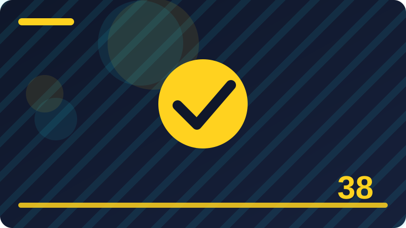

Chapter 38: Testing Your Own Systems Safely

Section 1: Testing Only Systems You Own or May Test
This section is about Testing Only Systems You Own or May Test, one part of Testing Your Own Systems Safely. It is worth slowing down here, because a small idea understood well now will save you real trouble later, and this topic comes up again and again in defensive security work. Think of Testing Only Systems You Own or May Test as a habit, not just a piece of knowledge. You do not need to master every detail today, but you should be able to explain it in plain words, recognise it when you meet it, and know what a safe first step looks like on your own system. At its simplest, Testing Only Systems You Own or May Test is about reducing risk without making your daily work impossible. Good security rarely means doing everything at once. It means choosing the few actions that remove the biggest risks, doing them carefully, and repeating them until they feel normal. That is why this section stays close to ordinary examples: a home computer, a small personal project, or a phone you use every day. When an example is small, you can see cause and effect clearly, and you can practise without putting anyone else at risk.
Start from the problem that Testing Only Systems You Own or May Test solves, not from jargon. Ask yourself what could go wrong if this part were ignored, who would be affected, and what a calm, sensible person would do first. Those three questions turn a vague worry into a plan. For example, imagine you leave an important key where anyone passing by could copy it. The risk is not only that someone might use it today. It is that you might never know it was copied, so you cannot tell when the danger has passed. That is why defenders prefer prevention, clear records, and the ability to change a secret or a setting quickly. Prevention stops most problems before they start. A record tells you what happened and when. And a quick change limits damage if something still goes wrong. Keep those three ideas in mind as you read, because almost every defensive practice in this chapter returns to them in one form or another.
Now picture Testing Only Systems You Own or May Test in a real day. You sit down at your own computer, you open your own project, and you check one thing at a time instead of rushing through a long list. You write down what you checked, what you found, and what you changed, in plain words that you could understand a month later. That note matters more than it seems. Without it, you will forget which settings you changed, which accounts you reviewed, and whether a warning you saw was new or old. With it, you can retrace your steps, show your work to a teacher or a teammate, and prove to yourself that the job was done properly. Good defenders are often just careful note-takers.
import os
from pathlib import Path
# Review folders in your own home directory only.
home = Path.home()
for item in sorted(home.iterdir()):
if item.is_dir():
print(item.name, 'folder found')
print('Review complete. Check permissions on sensitive folders next.')Check: Why must testing be limited to systems you own or are authorised to test?
Section 2: Start With an Inventory of Your Own Systems
Begin with Start With an Inventory of Your Own Systems and with the question it helps you answer while you are learning Testing Your Own Systems Safely. Every defensive idea earns its place by solving a real problem, not by sounding impressive, so this section starts from that problem and stays in plain language. Once you can say in your own words why Start With an Inventory of Your Own Systems matters, the details become much easier to remember, and the choices you make afterwards tend to be calmer and more deliberate. The key is to connect the new idea with something you already understand, such as locking a door, keeping a spare key in a safe place, or writing down who borrowed something. An everyday comparison helps at first, but it is only a starting point. The section then moves from the everyday picture to the precise behaviour on a computer, so that you are not misled when the real behaviour is slightly different from the picture. That move, from picture to practice, is where real learning happens.
Work through Start With an Inventory of Your Own Systems as if you were checking your own work, step by step. Keep track of what you looked at, what you decided, and what you left unchanged, because order and records matter in security far more than they do in ordinary writing. A step that looks harmless can change everything that follows, and a small change made in the wrong order can lock you out of your own account or leave a door open without you noticing. Going slowly is not a sign of weakness. It is how careful people avoid creating the very problem they were trying to prevent. If a step confuses you, pause and reread it instead of guessing. Guessing with passwords, keys, permissions, or reports can cause damage that is hard to undo, while pausing costs only a minute. Patience is a defensive tool, even though it is never sold as one.
Think about where Start With an Inventory of Your Own Systems fits into a project you might actually build, such as a small personal website, a study tool, or a toolkit that checks your own machine. Real defensive work is built from the same building blocks you are learning here, repeated and combined in different ways. If you can picture a use for Start With an Inventory of Your Own Systems outside this book, you are much more likely to remember it, and you will also start to notice it when you read other people's advice. Notice, too, what Start With an Inventory of Your Own Systems does not do. No single practice protects everything, and anyone who promises total safety is overselling. A good defender knows the limits of each tool and each habit, and combines several of them so that one failure does not become a disaster.
import shutil
# Confirm a backup tool exists before you rely on it.
print('Backup tool available:', shutil.which('cp') is not None)
print('A backup you have never restored is only a hope, not a plan.')Check: What should an inventory of your own systems include?
Section 3: Your Home Lab in Plain Words
In Testing Your Own Systems Safely, Your Home Lab in Plain Words is one of the ideas you will meet again and again, so it deserves a careful first look rather than a quick glance. This section explains the idea in plain language, shows a short defensive example, and points out the mistakes that beginners most often make. You are not expected to memorise everything here. You are expected to recognise Your Home Lab in Plain Words when you see it, to use it in a small safe task on your own system, and to know where to look when you need a reminder. When you meet Your Home Lab in Plain Words, ask three questions before you act. First, what am I protecting, and from whom? Second, what is the smallest safe step I can take? Third, what could go wrong if I rush, guess, or skip the record-keeping? Those three questions work for almost every topic in this book. They turn passive reading into active investigation, and they prepare you to check your own work instead of hoping that it happens to be right.
The example for Your Home Lab in Plain Words is intentionally ordinary, because ordinary examples reveal the normal behaviour you will rely on every day. Fancy examples can impress, but they often hide the simple rule underneath layers of detail. Once the simple rule is clear, you can apply it to harder problems with confidence, and you will recognise the same rule when it appears inside a longer guide written by someone else. As you practise Your Home Lab in Plain Words, expect to make small mistakes, and expect those mistakes to be informative, as long as they happen on your own system with your own test data. An error message is not a judgement on your ability. It is a clue, often pointing at the step where something first went wrong. Read it, look at that step, and ask what was expected there. Over time, you will start to recognise familiar messages and fix them quickly, which is one of the clearest signs that you are becoming a careful practitioner.
There is no single correct way to apply Your Home Lab in Plain Words in every situation, and part of learning security is developing judgement about trade-offs. A stricter setting is not always better if it locks you out of your own work, and a more convenient option is not always worse if it is used with other layers of protection. For now, favour the version that you can explain to someone else, because a practice that is easy to explain is usually easy to repeat, easy to check, and easy to trust. Talk it through out loud if you can. Explaining forces you to notice missing steps, vague words, and assumptions you did not realise you were making.
from pathlib import Path
# Check your own project for a safe test-data label.
test_file = Path('test-data.txt')
test_file.write_text('TEST DATA ONLY - not real user data')
print(test_file.read_text())Check: What is a home lab, and why is it safer than testing on a live system?
Section 4: A Spare Machine Beats Your Main Machine
This section looks closely at A Spare Machine Beats Your Main Machine, one building block inside Testing Your Own Systems Safely. It is worth slowing down here, because ideas that feel small at first often turn up again in much larger projects, and a clear understanding now will save you confusion later. Think of A Spare Machine Beats Your Main Machine as a tool you are adding to a growing toolkit. You do not need to master every detail today, but you should know what it is for, when it helps, and what a sensible first example looks like. At its simplest, A Spare Machine Beats Your Main Machine is about making your intention clear to both the computer and the next person who reads your work. The computer follows instructions literally, so vague thinking becomes a visible mistake, while clear thinking becomes a result that behaves as you expected. That is why examples in this section are deliberately small. With only a few steps to watch, you can see cause and effect without distraction, and you can trace exactly how each part contributes to the result.
A short example is the best way to make A Spare Machine Beats Your Main Machine concrete. Read it slowly, step by step, and say what you think each part does before you try it on your own system. Then try it, compare the result with your prediction, and if they differ, treat that difference as useful information rather than a failure. Learners gain more from a surprising result than from a result that merely confirms what they already believed, because surprise points to a gap in understanding. Beginners often stumble on A Spare Machine Beats Your Main Machine for the same few reasons, and naming those reasons in advance makes them easier to avoid. One common problem is rushing past the example without trying it, which leaves a fragile understanding that collapses at the first small change. Another is copying a setup without understanding it, which works until that setup needs to be adapted. A third is changing several things at once, which makes it impossible to tell which change caused a new result.
Beyond the first example, A Spare Machine Beats Your Main Machine becomes useful when it is combined with ideas from earlier chapters. Security is rarely about one idea in isolation. It is about combining small, reliable pieces into something larger. That is why this book returns to earlier ideas instead of leaving them behind. Each time you reuse an old idea in a new context, your understanding of both ideas deepens, and your practices become more flexible. For instance, a safe storage habit is stronger when it is combined with a backup habit, and a testing habit is stronger when it is combined with a reporting habit. Look for those connections as you read. They are not extra work.
import sys
# A simple checklist for your own machine.
checks = ['Updates installed', 'Backup tested', 'Unused accounts removed', 'Firewall on']
for c in checks:
print('[ ]', c)
print('Python version:', sys.version.split()[0])Check: Why is a spare machine useful for learning and testing?
Section 5: Snapshots and Backups Before You Test
This section is about Snapshots and Backups Before You Test, one part of Testing Your Own Systems Safely. It is worth slowing down here, because a small idea understood well now will save you real trouble later, and this topic comes up again and again in defensive security work. Think of Snapshots and Backups Before You Test as a habit, not just a piece of knowledge. You do not need to master every detail today, but you should be able to explain it in plain words, recognise it when you meet it, and know what a safe first step looks like on your own system. At its simplest, Snapshots and Backups Before You Test is about reducing risk without making your daily work impossible. Good security rarely means doing everything at once. It means choosing the few actions that remove the biggest risks, doing them carefully, and repeating them until they feel normal. That is why this section stays close to ordinary examples: a home computer, a small personal project, or a phone you use every day. When an example is small, you can see cause and effect clearly, and you can practise without putting anyone else at risk.
Start from the problem that Snapshots and Backups Before You Test solves, not from jargon. Ask yourself what could go wrong if this part were ignored, who would be affected, and what a calm, sensible person would do first. Those three questions turn a vague worry into a plan. For example, imagine you leave an important key where anyone passing by could copy it. The risk is not only that someone might use it today. It is that you might never know it was copied, so you cannot tell when the danger has passed. That is why defenders prefer prevention, clear records, and the ability to change a secret or a setting quickly. Prevention stops most problems before they start. A record tells you what happened and when. And a quick change limits damage if something still goes wrong. Keep those three ideas in mind as you read, because almost every defensive practice in this chapter returns to them in one form or another.
Now picture Snapshots and Backups Before You Test in a real day. You sit down at your own computer, you open your own project, and you check one thing at a time instead of rushing through a long list. You write down what you checked, what you found, and what you changed, in plain words that you could understand a month later. That note matters more than it seems. Without it, you will forget which settings you changed, which accounts you reviewed, and whether a warning you saw was new or old. With it, you can retrace your steps, show your work to a teacher or a teammate, and prove to yourself that the job was done properly. Good defenders are often just careful note-takers.
import os
from pathlib import Path
# Review folders in your own home directory only.
home = Path.home()
for item in sorted(home.iterdir()):
if item.is_dir():
print(item.name, 'folder found')
print('Review complete. Check permissions on sensitive folders next.')Check: What should you do before you change anything on your own system?
Section 6: An Isolated Test Network at Home
Begin with An Isolated Test Network at Home and with the question it helps you answer while you are learning Testing Your Own Systems Safely. Every defensive idea earns its place by solving a real problem, not by sounding impressive, so this section starts from that problem and stays in plain language. Once you can say in your own words why An Isolated Test Network at Home matters, the details become much easier to remember, and the choices you make afterwards tend to be calmer and more deliberate. The key is to connect the new idea with something you already understand, such as locking a door, keeping a spare key in a safe place, or writing down who borrowed something. An everyday comparison helps at first, but it is only a starting point. The section then moves from the everyday picture to the precise behaviour on a computer, so that you are not misled when the real behaviour is slightly different from the picture. That move, from picture to practice, is where real learning happens.
Work through An Isolated Test Network at Home as if you were checking your own work, step by step. Keep track of what you looked at, what you decided, and what you left unchanged, because order and records matter in security far more than they do in ordinary writing. A step that looks harmless can change everything that follows, and a small change made in the wrong order can lock you out of your own account or leave a door open without you noticing. Going slowly is not a sign of weakness. It is how careful people avoid creating the very problem they were trying to prevent. If a step confuses you, pause and reread it instead of guessing. Guessing with passwords, keys, permissions, or reports can cause damage that is hard to undo, while pausing costs only a minute. Patience is a defensive tool, even though it is never sold as one.
Think about where An Isolated Test Network at Home fits into a project you might actually build, such as a small personal website, a study tool, or a toolkit that checks your own machine. Real defensive work is built from the same building blocks you are learning here, repeated and combined in different ways. If you can picture a use for An Isolated Test Network at Home outside this book, you are much more likely to remember it, and you will also start to notice it when you read other people's advice. Notice, too, what An Isolated Test Network at Home does not do. No single practice protects everything, and anyone who promises total safety is overselling. A good defender knows the limits of each tool and each habit, and combines several of them so that one failure does not become a disaster. That honesty about limits is part of what makes a defender trustworthy, whether you are helping yourself, your family, or a future employer.
import shutil
# Confirm a backup tool exists before you rely on it.
print('Backup tool available:', shutil.which('cp') is not None)
print('A backup you have never restored is only a hope, not a plan.')Check: How would you explain An Isolated Test Network at Home to someone who is new to this chapter, and what safe first step would you suggest?
Section 7: Test Accounts That Are Not Your Real Accounts
In Testing Your Own Systems Safely, Test Accounts That Are Not Your Real Accounts is one of the ideas you will meet again and again, so it deserves a careful first look rather than a quick glance. This section explains the idea in plain language, shows a short defensive example, and points out the mistakes that beginners most often make. You are not expected to memorise everything here. You are expected to recognise Test Accounts That Are Not Your Real Accounts when you see it, to use it in a small safe task on your own system, and to know where to look when you need a reminder. When you meet Test Accounts That Are Not Your Real Accounts, ask three questions before you act. First, what am I protecting, and from whom? Second, what is the smallest safe step I can take? Third, what could go wrong if I rush, guess, or skip the record-keeping? Those three questions work for almost every topic in this book. They turn passive reading into active investigation, and they prepare you to check your own work instead of hoping that it happens to be right.
The example for Test Accounts That Are Not Your Real Accounts is intentionally ordinary, because ordinary examples reveal the normal behaviour you will rely on every day. Fancy examples can impress, but they often hide the simple rule underneath layers of detail. Once the simple rule is clear, you can apply it to harder problems with confidence, and you will recognise the same rule when it appears inside a longer guide written by someone else. As you practise Test Accounts That Are Not Your Real Accounts, expect to make small mistakes, and expect those mistakes to be informative, as long as they happen on your own system with your own test data. An error message is not a judgement on your ability. It is a clue, often pointing at the step where something first went wrong. Read it, look at that step, and ask what was expected there. Over time, you will start to recognise familiar messages and fix them quickly, which is one of the clearest signs that you are becoming a careful practitioner.
There is no single correct way to apply Test Accounts That Are Not Your Real Accounts in every situation, and part of learning security is developing judgement about trade-offs. A stricter setting is not always better if it locks you out of your own work, and a more convenient option is not always worse if it is used with other layers of protection. For now, favour the version that you can explain to someone else, because a practice that is easy to explain is usually easy to repeat, easy to check, and easy to trust. Talk it through out loud if you can. Explaining forces you to notice missing steps, vague words, and assumptions you did not realise you were making.
from pathlib import Path
# Check your own project for a safe test-data label.
test_file = Path('test-data.txt')
test_file.write_text('TEST DATA ONLY - not real user data')
print(test_file.read_text())Check: How would you explain Test Accounts That Are Not Your Real Accounts to someone who is new to this chapter, and what safe first step would you suggest?
Section 8: A Written Test Plan for Your Own System
This section looks closely at A Written Test Plan for Your Own System, one building block inside Testing Your Own Systems Safely. It is worth slowing down here, because ideas that feel small at first often turn up again in much larger projects, and a clear understanding now will save you confusion later. Think of A Written Test Plan for Your Own System as a tool you are adding to a growing toolkit. You do not need to master every detail today, but you should know what it is for, when it helps, and what a sensible first example looks like. At its simplest, A Written Test Plan for Your Own System is about making your intention clear to both the computer and the next person who reads your work. The computer follows instructions literally, so vague thinking becomes a visible mistake, while clear thinking becomes a result that behaves as you expected. That is why examples in this section are deliberately small. With only a few steps to watch, you can see cause and effect without distraction, and you can trace exactly how each part contributes to the result.
A short example is the best way to make A Written Test Plan for Your Own System concrete. Read it slowly, step by step, and say what you think each part does before you try it on your own system. Then try it, compare the result with your prediction, and if they differ, treat that difference as useful information rather than a failure. Learners gain more from a surprising result than from a result that merely confirms what they already believed, because surprise points to a gap in understanding. Beginners often stumble on A Written Test Plan for Your Own System for the same few reasons, and naming those reasons in advance makes them easier to avoid. One common problem is rushing past the example without trying it, which leaves a fragile understanding that collapses at the first small change. Another is copying a setup without understanding it, which works until that setup needs to be adapted. A third is changing several things at once, which makes it impossible to tell which change caused a new result.
Beyond the first example, A Written Test Plan for Your Own System becomes useful when it is combined with ideas from earlier chapters. Security is rarely about one idea in isolation. It is about combining small, reliable pieces into something larger. That is why this book returns to earlier ideas instead of leaving them behind. Each time you reuse an old idea in a new context, your understanding of both ideas deepens, and your practices become more flexible. For instance, a safe storage habit is stronger when it is combined with a backup habit, and a testing habit is stronger when it is combined with a reporting habit. Look for those connections as you read. They are not extra work.
import sys
# A simple checklist for your own machine.
checks = ['Updates installed', 'Backup tested', 'Unused accounts removed', 'Firewall on']
for c in checks:
print('[ ]', c)
print('Python version:', sys.version.split()[0])Check: How would you explain A Written Test Plan for Your Own System to someone who is new to this chapter, and what safe first step would you suggest?
Section 9: Small Tests Before Big Tests
This section is about Small Tests Before Big Tests, one part of Testing Your Own Systems Safely. It is worth slowing down here, because a small idea understood well now will save you real trouble later, and this topic comes up again and again in defensive security work. Think of Small Tests Before Big Tests as a habit, not just a piece of knowledge. You do not need to master every detail today, but you should be able to explain it in plain words, recognise it when you meet it, and know what a safe first step looks like on your own system. At its simplest, Small Tests Before Big Tests is about reducing risk without making your daily work impossible. Good security rarely means doing everything at once. It means choosing the few actions that remove the biggest risks, doing them carefully, and repeating them until they feel normal. That is why this section stays close to ordinary examples: a home computer, a small personal project, or a phone you use every day. When an example is small, you can see cause and effect clearly, and you can practise without putting anyone else at risk.
Start from the problem that Small Tests Before Big Tests solves, not from jargon. Ask yourself what could go wrong if this part were ignored, who would be affected, and what a calm, sensible person would do first. Those three questions turn a vague worry into a plan. For example, imagine you leave an important key where anyone passing by could copy it. The risk is not only that someone might use it today. It is that you might never know it was copied, so you cannot tell when the danger has passed. That is why defenders prefer prevention, clear records, and the ability to change a secret or a setting quickly. Prevention stops most problems before they start. A record tells you what happened and when. And a quick change limits damage if something still goes wrong. Keep those three ideas in mind as you read, because almost every defensive practice in this chapter returns to them in one form or another.
Now picture Small Tests Before Big Tests in a real day. You sit down at your own computer, you open your own project, and you check one thing at a time instead of rushing through a long list. You write down what you checked, what you found, and what you changed, in plain words that you could understand a month later. That note matters more than it seems. Without it, you will forget which settings you changed, which accounts you reviewed, and whether a warning you saw was new or old. With it, you can retrace your steps, show your work to a teacher or a teammate, and prove to yourself that the job was done properly. Good defenders are often just careful note-takers.
import os
from pathlib import Path
# Review folders in your own home directory only.
home = Path.home()
for item in sorted(home.iterdir()):
if item.is_dir():
print(item.name, 'folder found')
print('Review complete. Check permissions on sensitive folders next.')Check: How would you explain Small Tests Before Big Tests to someone who is new to this chapter, and what safe first step would you suggest?
Section 10: Reading Your Own Settings First
Begin with Reading Your Own Settings First and with the question it helps you answer while you are learning Testing Your Own Systems Safely. Every defensive idea earns its place by solving a real problem, not by sounding impressive, so this section starts from that problem and stays in plain language. Once you can say in your own words why Reading Your Own Settings First matters, the details become much easier to remember, and the choices you make afterwards tend to be calmer and more deliberate. The key is to connect the new idea with something you already understand, such as locking a door, keeping a spare key in a safe place, or writing down who borrowed something. An everyday comparison helps at first, but it is only a starting point. The section then moves from the everyday picture to the precise behaviour on a computer, so that you are not misled when the real behaviour is slightly different from the picture. That move, from picture to practice, is where real learning happens.
Work through Reading Your Own Settings First as if you were checking your own work, step by step. Keep track of what you looked at, what you decided, and what you left unchanged, because order and records matter in security far more than they do in ordinary writing. A step that looks harmless can change everything that follows, and a small change made in the wrong order can lock you out of your own account or leave a door open without you noticing. Going slowly is not a sign of weakness. It is how careful people avoid creating the very problem they were trying to prevent. If a step confuses you, pause and reread it instead of guessing. Guessing with passwords, keys, permissions, or reports can cause damage that is hard to undo, while pausing costs only a minute. Patience is a defensive tool, even though it is never sold as one.
Think about where Reading Your Own Settings First fits into a project you might actually build, such as a small personal website, a study tool, or a toolkit that checks your own machine. Real defensive work is built from the same building blocks you are learning here, repeated and combined in different ways. If you can picture a use for Reading Your Own Settings First outside this book, you are much more likely to remember it, and you will also start to notice it when you read other people's advice. Notice, too, what Reading Your Own Settings First does not do. No single practice protects everything, and anyone who promises total safety is overselling. A good defender knows the limits of each tool and each habit, and combines several of them so that one failure does not become a disaster. That honesty about limits is part of what makes a defender trustworthy, whether you are helping yourself, your family, or a future employer.
import shutil
# Confirm a backup tool exists before you rely on it.
print('Backup tool available:', shutil.which('cp') is not None)
print('A backup you have never restored is only a hope, not a plan.')Check: How would you explain Reading Your Own Settings First to someone who is new to this chapter, and what safe first step would you suggest?
Section 11: Checking Updates on Your Own Machine
In Testing Your Own Systems Safely, Checking Updates on Your Own Machine is one of the ideas you will meet again and again, so it deserves a careful first look rather than a quick glance. This section explains the idea in plain language, shows a short defensive example, and points out the mistakes that beginners most often make. You are not expected to memorise everything here. You are expected to recognise Checking Updates on Your Own Machine when you see it, to use it in a small safe task on your own system, and to know where to look when you need a reminder. When you meet Checking Updates on Your Own Machine, ask three questions before you act. First, what am I protecting, and from whom? Second, what is the smallest safe step I can take? Third, what could go wrong if I rush, guess, or skip the record-keeping? Those three questions work for almost every topic in this book. They turn passive reading into active investigation, and they prepare you to check your own work instead of hoping that it happens to be right.
The example for Checking Updates on Your Own Machine is intentionally ordinary, because ordinary examples reveal the normal behaviour you will rely on every day. Fancy examples can impress, but they often hide the simple rule underneath layers of detail. Once the simple rule is clear, you can apply it to harder problems with confidence, and you will recognise the same rule when it appears inside a longer guide written by someone else. As you practise Checking Updates on Your Own Machine, expect to make small mistakes, and expect those mistakes to be informative, as long as they happen on your own system with your own test data. An error message is not a judgement on your ability. It is a clue, often pointing at the step where something first went wrong. Read it, look at that step, and ask what was expected there. Over time, you will start to recognise familiar messages and fix them quickly, which is one of the clearest signs that you are becoming a careful practitioner.
There is no single correct way to apply Checking Updates on Your Own Machine in every situation, and part of learning security is developing judgement about trade-offs. A stricter setting is not always better if it locks you out of your own work, and a more convenient option is not always worse if it is used with other layers of protection. For now, favour the version that you can explain to someone else, because a practice that is easy to explain is usually easy to repeat, easy to check, and easy to trust. Talk it through out loud if you can. Explaining forces you to notice missing steps, vague words, and assumptions you did not realise you were making.
from pathlib import Path
# Check your own project for a safe test-data label.
test_file = Path('test-data.txt')
test_file.write_text('TEST DATA ONLY - not real user data')
print(test_file.read_text())Check: How would you explain Checking Updates on Your Own Machine to someone who is new to this chapter, and what safe first step would you suggest?
Section 12: Reviewing Accounts on Your Own Machine
This section looks closely at Reviewing Accounts on Your Own Machine, one building block inside Testing Your Own Systems Safely. It is worth slowing down here, because ideas that feel small at first often turn up again in much larger projects, and a clear understanding now will save you confusion later. Think of Reviewing Accounts on Your Own Machine as a tool you are adding to a growing toolkit. You do not need to master every detail today, but you should know what it is for, when it helps, and what a sensible first example looks like. At its simplest, Reviewing Accounts on Your Own Machine is about making your intention clear to both the computer and the next person who reads your work. The computer follows instructions literally, so vague thinking becomes a visible mistake, while clear thinking becomes a result that behaves as you expected. That is why examples in this section are deliberately small. With only a few steps to watch, you can see cause and effect without distraction, and you can trace exactly how each part contributes to the result.
A short example is the best way to make Reviewing Accounts on Your Own Machine concrete. Read it slowly, step by step, and say what you think each part does before you try it on your own system. Then try it, compare the result with your prediction, and if they differ, treat that difference as useful information rather than a failure. Learners gain more from a surprising result than from a result that merely confirms what they already believed, because surprise points to a gap in understanding. Beginners often stumble on Reviewing Accounts on Your Own Machine for the same few reasons, and naming those reasons in advance makes them easier to avoid. One common problem is rushing past the example without trying it, which leaves a fragile understanding that collapses at the first small change. Another is copying a setup without understanding it, which works until that setup needs to be adapted. A third is changing several things at once, which makes it impossible to tell which change caused a new result.
Beyond the first example, Reviewing Accounts on Your Own Machine becomes useful when it is combined with ideas from earlier chapters. Security is rarely about one idea in isolation. It is about combining small, reliable pieces into something larger. That is why this book returns to earlier ideas instead of leaving them behind. Each time you reuse an old idea in a new context, your understanding of both ideas deepens, and your practices become more flexible. For instance, a safe storage habit is stronger when it is combined with a backup habit, and a testing habit is stronger when it is combined with a reporting habit. Look for those connections as you read. They are not extra work.
import sys
# A simple checklist for your own machine.
checks = ['Updates installed', 'Backup tested', 'Unused accounts removed', 'Firewall on']
for c in checks:
print('[ ]', c)
print('Python version:', sys.version.split()[0])Check: How would you explain Reviewing Accounts on Your Own Machine to someone who is new to this chapter, and what safe first step would you suggest?
Section 13: Reviewing File Permissions on Your Own Folders
This section is about Reviewing File Permissions on Your Own Folders, one part of Testing Your Own Systems Safely. It is worth slowing down here, because a small idea understood well now will save you real trouble later, and this topic comes up again and again in defensive security work. Think of Reviewing File Permissions on Your Own Folders as a habit, not just a piece of knowledge. You do not need to master every detail today, but you should be able to explain it in plain words, recognise it when you meet it, and know what a safe first step looks like on your own system. At its simplest, Reviewing File Permissions on Your Own Folders is about reducing risk without making your daily work impossible. Good security rarely means doing everything at once. It means choosing the few actions that remove the biggest risks, doing them carefully, and repeating them until they feel normal. That is why this section stays close to ordinary examples: a home computer, a small personal project, or a phone you use every day. When an example is small, you can see cause and effect clearly, and you can practise without putting anyone else at risk.
Start from the problem that Reviewing File Permissions on Your Own Folders solves, not from jargon. Ask yourself what could go wrong if this part were ignored, who would be affected, and what a calm, sensible person would do first. Those three questions turn a vague worry into a plan. For example, imagine you leave an important key where anyone passing by could copy it. The risk is not only that someone might use it today. It is that you might never know it was copied, so you cannot tell when the danger has passed. That is why defenders prefer prevention, clear records, and the ability to change a secret or a setting quickly. Prevention stops most problems before they start. A record tells you what happened and when. And a quick change limits damage if something still goes wrong. Keep those three ideas in mind as you read, because almost every defensive practice in this chapter returns to them in one form or another.
Now picture Reviewing File Permissions on Your Own Folders in a real day. You sit down at your own computer, you open your own project, and you check one thing at a time instead of rushing through a long list. You write down what you checked, what you found, and what you changed, in plain words that you could understand a month later. That note matters more than it seems. Without it, you will forget which settings you changed, which accounts you reviewed, and whether a warning you saw was new or old. With it, you can retrace your steps, show your work to a teacher or a teammate, and prove to yourself that the job was done properly. Good defenders are often just careful note-takers.
import os
from pathlib import Path
# Review folders in your own home directory only.
home = Path.home()
for item in sorted(home.iterdir()):
if item.is_dir():
print(item.name, 'folder found')
print('Review complete. Check permissions on sensitive folders next.')Check: How would you explain Reviewing File Permissions on Your Own Folders to someone who is new to this chapter, and what safe first step would you suggest?
Section 14: Checking Your Firewall Settings Safely
Begin with Checking Your Firewall Settings Safely and with the question it helps you answer while you are learning Testing Your Own Systems Safely. Every defensive idea earns its place by solving a real problem, not by sounding impressive, so this section starts from that problem and stays in plain language. Once you can say in your own words why Checking Your Firewall Settings Safely matters, the details become much easier to remember, and the choices you make afterwards tend to be calmer and more deliberate. The key is to connect the new idea with something you already understand, such as locking a door, keeping a spare key in a safe place, or writing down who borrowed something. An everyday comparison helps at first, but it is only a starting point. The section then moves from the everyday picture to the precise behaviour on a computer, so that you are not misled when the real behaviour is slightly different from the picture. That move, from picture to practice, is where real learning happens.
Work through Checking Your Firewall Settings Safely as if you were checking your own work, step by step. Keep track of what you looked at, what you decided, and what you left unchanged, because order and records matter in security far more than they do in ordinary writing. A step that looks harmless can change everything that follows, and a small change made in the wrong order can lock you out of your own account or leave a door open without you noticing. Going slowly is not a sign of weakness. It is how careful people avoid creating the very problem they were trying to prevent. If a step confuses you, pause and reread it instead of guessing. Guessing with passwords, keys, permissions, or reports can cause damage that is hard to undo, while pausing costs only a minute. Patience is a defensive tool, even though it is never sold as one.
Think about where Checking Your Firewall Settings Safely fits into a project you might actually build, such as a small personal website, a study tool, or a toolkit that checks your own machine. Real defensive work is built from the same building blocks you are learning here, repeated and combined in different ways. If you can picture a use for Checking Your Firewall Settings Safely outside this book, you are much more likely to remember it, and you will also start to notice it when you read other people's advice. Notice, too, what Checking Your Firewall Settings Safely does not do. No single practice protects everything, and anyone who promises total safety is overselling. A good defender knows the limits of each tool and each habit, and combines several of them so that one failure does not become a disaster. That honesty about limits is part of what makes a defender trustworthy, whether you are helping yourself, your family, or a future employer.
import shutil
# Confirm a backup tool exists before you rely on it.
print('Backup tool available:', shutil.which('cp') is not None)
print('A backup you have never restored is only a hope, not a plan.')Check: How would you explain Checking Your Firewall Settings Safely to someone who is new to this chapter, and what safe first step would you suggest?
Section 15: Checking Your Own Wi-Fi Settings
In Testing Your Own Systems Safely, Checking Your Own Wi-Fi Settings is one of the ideas you will meet again and again, so it deserves a careful first look rather than a quick glance. This section explains the idea in plain language, shows a short defensive example, and points out the mistakes that beginners most often make. You are not expected to memorise everything here. You are expected to recognise Checking Your Own Wi-Fi Settings when you see it, to use it in a small safe task on your own system, and to know where to look when you need a reminder. When you meet Checking Your Own Wi-Fi Settings, ask three questions before you act. First, what am I protecting, and from whom? Second, what is the smallest safe step I can take? Third, what could go wrong if I rush, guess, or skip the record-keeping? Those three questions work for almost every topic in this book. They turn passive reading into active investigation, and they prepare you to check your own work instead of hoping that it happens to be right.
The example for Checking Your Own Wi-Fi Settings is intentionally ordinary, because ordinary examples reveal the normal behaviour you will rely on every day. Fancy examples can impress, but they often hide the simple rule underneath layers of detail. Once the simple rule is clear, you can apply it to harder problems with confidence, and you will recognise the same rule when it appears inside a longer guide written by someone else. As you practise Checking Your Own Wi-Fi Settings, expect to make small mistakes, and expect those mistakes to be informative, as long as they happen on your own system with your own test data. An error message is not a judgement on your ability. It is a clue, often pointing at the step where something first went wrong. Read it, look at that step, and ask what was expected there. Over time, you will start to recognise familiar messages and fix them quickly, which is one of the clearest signs that you are becoming a careful practitioner.
There is no single correct way to apply Checking Your Own Wi-Fi Settings in every situation, and part of learning security is developing judgement about trade-offs. A stricter setting is not always better if it locks you out of your own work, and a more convenient option is not always worse if it is used with other layers of protection. For now, favour the version that you can explain to someone else, because a practice that is easy to explain is usually easy to repeat, easy to check, and easy to trust. Talk it through out loud if you can. Explaining forces you to notice missing steps, vague words, and assumptions you did not realise you were making. If a friend asked you why you did something this way, could you give a calm, honest answer? If not, that is not a failure.
from pathlib import Path
# Check your own project for a safe test-data label.
test_file = Path('test-data.txt')
test_file.write_text('TEST DATA ONLY - not real user data')
print(test_file.read_text())Check: How would you explain Checking Your Own Wi-Fi Settings to someone who is new to this chapter, and what safe first step would you suggest?
Section 16: Reviewing App Permissions on Your Own Phone
This section looks closely at Reviewing App Permissions on Your Own Phone, one building block inside Testing Your Own Systems Safely. It is worth slowing down here, because ideas that feel small at first often turn up again in much larger projects, and a clear understanding now will save you confusion later. Think of Reviewing App Permissions on Your Own Phone as a tool you are adding to a growing toolkit. You do not need to master every detail today, but you should know what it is for, when it helps, and what a sensible first example looks like. At its simplest, Reviewing App Permissions on Your Own Phone is about making your intention clear to both the computer and the next person who reads your work. The computer follows instructions literally, so vague thinking becomes a visible mistake, while clear thinking becomes a result that behaves as you expected. That is why examples in this section are deliberately small. With only a few steps to watch, you can see cause and effect without distraction, and you can trace exactly how each part contributes to the result.
A short example is the best way to make Reviewing App Permissions on Your Own Phone concrete. Read it slowly, step by step, and say what you think each part does before you try it on your own system. Then try it, compare the result with your prediction, and if they differ, treat that difference as useful information rather than a failure. Learners gain more from a surprising result than from a result that merely confirms what they already believed, because surprise points to a gap in understanding. Beginners often stumble on Reviewing App Permissions on Your Own Phone for the same few reasons, and naming those reasons in advance makes them easier to avoid. One common problem is rushing past the example without trying it, which leaves a fragile understanding that collapses at the first small change. Another is copying a setup without understanding it, which works until that setup needs to be adapted. A third is changing several things at once, which makes it impossible to tell which change caused a new result.
Beyond the first example, Reviewing App Permissions on Your Own Phone becomes useful when it is combined with ideas from earlier chapters. Security is rarely about one idea in isolation. It is about combining small, reliable pieces into something larger. That is why this book returns to earlier ideas instead of leaving them behind. Each time you reuse an old idea in a new context, your understanding of both ideas deepens, and your practices become more flexible. For instance, a safe storage habit is stronger when it is combined with a backup habit, and a testing habit is stronger when it is combined with a reporting habit. Look for those connections as you read. They are not extra work.
import sys
# A simple checklist for your own machine.
checks = ['Updates installed', 'Backup tested', 'Unused accounts removed', 'Firewall on']
for c in checks:
print('[ ]', c)
print('Python version:', sys.version.split()[0])Check: How would you explain Reviewing App Permissions on Your Own Phone to someone who is new to this chapter, and what safe first step would you suggest?
Section 17: A Password Audit of Your Own Passwords
This section is about A Password Audit of Your Own Passwords, one part of Testing Your Own Systems Safely. It is worth slowing down here, because a small idea understood well now will save you real trouble later, and this topic comes up again and again in defensive security work. Think of A Password Audit of Your Own Passwords as a habit, not just a piece of knowledge. You do not need to master every detail today, but you should be able to explain it in plain words, recognise it when you meet it, and know what a safe first step looks like on your own system. At its simplest, A Password Audit of Your Own Passwords is about reducing risk without making your daily work impossible. Good security rarely means doing everything at once. It means choosing the few actions that remove the biggest risks, doing them carefully, and repeating them until they feel normal. That is why this section stays close to ordinary examples: a home computer, a small personal project, or a phone you use every day. When an example is small, you can see cause and effect clearly, and you can practise without putting anyone else at risk.
Start from the problem that A Password Audit of Your Own Passwords solves, not from jargon. Ask yourself what could go wrong if this part were ignored, who would be affected, and what a calm, sensible person would do first. Those three questions turn a vague worry into a plan. For example, imagine you leave an important key where anyone passing by could copy it. The risk is not only that someone might use it today. It is that you might never know it was copied, so you cannot tell when the danger has passed. That is why defenders prefer prevention, clear records, and the ability to change a secret or a setting quickly. Prevention stops most problems before they start. A record tells you what happened and when. And a quick change limits damage if something still goes wrong. Keep those three ideas in mind as you read, because almost every defensive practice in this chapter returns to them in one form or another.
Now picture A Password Audit of Your Own Passwords in a real day. You sit down at your own computer, you open your own project, and you check one thing at a time instead of rushing through a long list. You write down what you checked, what you found, and what you changed, in plain words that you could understand a month later. That note matters more than it seems. Without it, you will forget which settings you changed, which accounts you reviewed, and whether a warning you saw was new or old. With it, you can retrace your steps, show your work to a teacher or a teammate, and prove to yourself that the job was done properly. Good defenders are often just careful note-takers.
import os
from pathlib import Path
# Review folders in your own home directory only.
home = Path.home()
for item in sorted(home.iterdir()):
if item.is_dir():
print(item.name, 'folder found')
print('Review complete. Check permissions on sensitive folders next.')Check: How would you explain A Password Audit of Your Own Passwords to someone who is new to this chapter, and what safe first step would you suggest?
Section 18: Checking for Old and Unused Accounts
Begin with Checking for Old and Unused Accounts and with the question it helps you answer while you are learning Testing Your Own Systems Safely. Every defensive idea earns its place by solving a real problem, not by sounding impressive, so this section starts from that problem and stays in plain language. Once you can say in your own words why Checking for Old and Unused Accounts matters, the details become much easier to remember, and the choices you make afterwards tend to be calmer and more deliberate. The key is to connect the new idea with something you already understand, such as locking a door, keeping a spare key in a safe place, or writing down who borrowed something. An everyday comparison helps at first, but it is only a starting point. The section then moves from the everyday picture to the precise behaviour on a computer, so that you are not misled when the real behaviour is slightly different from the picture. That move, from picture to practice, is where real learning happens.
Work through Checking for Old and Unused Accounts as if you were checking your own work, step by step. Keep track of what you looked at, what you decided, and what you left unchanged, because order and records matter in security far more than they do in ordinary writing. A step that looks harmless can change everything that follows, and a small change made in the wrong order can lock you out of your own account or leave a door open without you noticing. Going slowly is not a sign of weakness. It is how careful people avoid creating the very problem they were trying to prevent. If a step confuses you, pause and reread it instead of guessing. Guessing with passwords, keys, permissions, or reports can cause damage that is hard to undo, while pausing costs only a minute. Patience is a defensive tool, even though it is never sold as one.
Think about where Checking for Old and Unused Accounts fits into a project you might actually build, such as a small personal website, a study tool, or a toolkit that checks your own machine. Real defensive work is built from the same building blocks you are learning here, repeated and combined in different ways. If you can picture a use for Checking for Old and Unused Accounts outside this book, you are much more likely to remember it, and you will also start to notice it when you read other people's advice. Notice, too, what Checking for Old and Unused Accounts does not do. No single practice protects everything, and anyone who promises total safety is overselling. A good defender knows the limits of each tool and each habit, and combines several of them so that one failure does not become a disaster. That honesty about limits is part of what makes a defender trustworthy, whether you are helping yourself, your family, or a future employer.
import shutil
# Confirm a backup tool exists before you rely on it.
print('Backup tool available:', shutil.which('cp') is not None)
print('A backup you have never restored is only a hope, not a plan.')Check: How would you explain Checking for Old and Unused Accounts to someone who is new to this chapter, and what safe first step would you suggest?
Section 19: Reading Your Own Logs for Warning Signs
In Testing Your Own Systems Safely, Reading Your Own Logs for Warning Signs is one of the ideas you will meet again and again, so it deserves a careful first look rather than a quick glance. This section explains the idea in plain language, shows a short defensive example, and points out the mistakes that beginners most often make. You are not expected to memorise everything here. You are expected to recognise Reading Your Own Logs for Warning Signs when you see it, to use it in a small safe task on your own system, and to know where to look when you need a reminder. When you meet Reading Your Own Logs for Warning Signs, ask three questions before you act. First, what am I protecting, and from whom? Second, what is the smallest safe step I can take? Third, what could go wrong if I rush, guess, or skip the record-keeping? Those three questions work for almost every topic in this book. They turn passive reading into active investigation, and they prepare you to check your own work instead of hoping that it happens to be right.
The example for Reading Your Own Logs for Warning Signs is intentionally ordinary, because ordinary examples reveal the normal behaviour you will rely on every day. Fancy examples can impress, but they often hide the simple rule underneath layers of detail. Once the simple rule is clear, you can apply it to harder problems with confidence, and you will recognise the same rule when it appears inside a longer guide written by someone else. As you practise Reading Your Own Logs for Warning Signs, expect to make small mistakes, and expect those mistakes to be informative, as long as they happen on your own system with your own test data. An error message is not a judgement on your ability. It is a clue, often pointing at the step where something first went wrong. Read it, look at that step, and ask what was expected there. Over time, you will start to recognise familiar messages and fix them quickly, which is one of the clearest signs that you are becoming a careful practitioner.
There is no single correct way to apply Reading Your Own Logs for Warning Signs in every situation, and part of learning security is developing judgement about trade-offs. A stricter setting is not always better if it locks you out of your own work, and a more convenient option is not always worse if it is used with other layers of protection. For now, favour the version that you can explain to someone else, because a practice that is easy to explain is usually easy to repeat, easy to check, and easy to trust. Talk it through out loud if you can. Explaining forces you to notice missing steps, vague words, and assumptions you did not realise you were making.
from pathlib import Path
# Check your own project for a safe test-data label.
test_file = Path('test-data.txt')
test_file.write_text('TEST DATA ONLY - not real user data')
print(test_file.read_text())Check: How would you explain Reading Your Own Logs for Warning Signs to someone who is new to this chapter, and what safe first step would you suggest?
Section 20: Checking Your Backup Really Restores
This section looks closely at Checking Your Backup Really Restores, one building block inside Testing Your Own Systems Safely. It is worth slowing down here, because ideas that feel small at first often turn up again in much larger projects, and a clear understanding now will save you confusion later. Think of Checking Your Backup Really Restores as a tool you are adding to a growing toolkit. You do not need to master every detail today, but you should know what it is for, when it helps, and what a sensible first example looks like. At its simplest, Checking Your Backup Really Restores is about making your intention clear to both the computer and the next person who reads your work. The computer follows instructions literally, so vague thinking becomes a visible mistake, while clear thinking becomes a result that behaves as you expected. That is why examples in this section are deliberately small. With only a few steps to watch, you can see cause and effect without distraction, and you can trace exactly how each part contributes to the result.
A short example is the best way to make Checking Your Backup Really Restores concrete. Read it slowly, step by step, and say what you think each part does before you try it on your own system. Then try it, compare the result with your prediction, and if they differ, treat that difference as useful information rather than a failure. Learners gain more from a surprising result than from a result that merely confirms what they already believed, because surprise points to a gap in understanding. Beginners often stumble on Checking Your Backup Really Restores for the same few reasons, and naming those reasons in advance makes them easier to avoid. One common problem is rushing past the example without trying it, which leaves a fragile understanding that collapses at the first small change. Another is copying a setup without understanding it, which works until that setup needs to be adapted. A third is changing several things at once, which makes it impossible to tell which change caused a new result.
Beyond the first example, Checking Your Backup Really Restores becomes useful when it is combined with ideas from earlier chapters. Security is rarely about one idea in isolation. It is about combining small, reliable pieces into something larger. That is why this book returns to earlier ideas instead of leaving them behind. Each time you reuse an old idea in a new context, your understanding of both ideas deepens, and your practices become more flexible. For instance, a safe storage habit is stronger when it is combined with a backup habit, and a testing habit is stronger when it is combined with a reporting habit. Look for those connections as you read. They are not extra work. They are the pattern that turns a list of topics into a way of working that you can carry into any job, project, or personal system.
import sys
# A simple checklist for your own machine.
checks = ['Updates installed', 'Backup tested', 'Unused accounts removed', 'Firewall on']
for c in checks:
print('[ ]', c)
print('Python version:', sys.version.split()[0])Check: How would you explain Checking Your Backup Really Restores to someone who is new to this chapter, and what safe first step would you suggest?
Section 21: Testing Your Restore, Not Just Your Backup
This section is about Testing Your Restore, Not Just Your Backup, one part of Testing Your Own Systems Safely. It is worth slowing down here, because a small idea understood well now will save you real trouble later, and this topic comes up again and again in defensive security work. Think of Testing Your Restore, Not Just Your Backup as a habit, not just a piece of knowledge. You do not need to master every detail today, but you should be able to explain it in plain words, recognise it when you meet it, and know what a safe first step looks like on your own system. At its simplest, Testing Your Restore, Not Just Your Backup is about reducing risk without making your daily work impossible. Good security rarely means doing everything at once. It means choosing the few actions that remove the biggest risks, doing them carefully, and repeating them until they feel normal. That is why this section stays close to ordinary examples: a home computer, a small personal project, or a phone you use every day. When an example is small, you can see cause and effect clearly, and you can practise without putting anyone else at risk.
Start from the problem that Testing Your Restore, Not Just Your Backup solves, not from jargon. Ask yourself what could go wrong if this part were ignored, who would be affected, and what a calm, sensible person would do first. Those three questions turn a vague worry into a plan. For example, imagine you leave an important key where anyone passing by could copy it. The risk is not only that someone might use it today. It is that you might never know it was copied, so you cannot tell when the danger has passed. That is why defenders prefer prevention, clear records, and the ability to change a secret or a setting quickly. Prevention stops most problems before they start. A record tells you what happened and when. And a quick change limits damage if something still goes wrong. Keep those three ideas in mind as you read, because almost every defensive practice in this chapter returns to them in one form or another.
Now picture Testing Your Restore, Not Just Your Backup in a real day. You sit down at your own computer, you open your own project, and you check one thing at a time instead of rushing through a long list. You write down what you checked, what you found, and what you changed, in plain words that you could understand a month later. That note matters more than it seems. Without it, you will forget which settings you changed, which accounts you reviewed, and whether a warning you saw was new or old. With it, you can retrace your steps, show your work to a teacher or a teammate, and prove to yourself that the job was done properly. Good defenders are often just careful note-takers.
import os
from pathlib import Path
# Review folders in your own home directory only.
home = Path.home()
for item in sorted(home.iterdir()):
if item.is_dir():
print(item.name, 'folder found')
print('Review complete. Check permissions on sensitive folders next.')Check: How would you explain Testing Your Restore, Not Just Your Backup to someone who is new to this chapter, and what safe first step would you suggest?
Section 22: Safe Configuration Checks in Plain Words
Begin with Safe Configuration Checks in Plain Words and with the question it helps you answer while you are learning Testing Your Own Systems Safely. Every defensive idea earns its place by solving a real problem, not by sounding impressive, so this section starts from that problem and stays in plain language. Once you can say in your own words why Safe Configuration Checks in Plain Words matters, the details become much easier to remember, and the choices you make afterwards tend to be calmer and more deliberate. The key is to connect the new idea with something you already understand, such as locking a door, keeping a spare key in a safe place, or writing down who borrowed something. An everyday comparison helps at first, but it is only a starting point. The section then moves from the everyday picture to the precise behaviour on a computer, so that you are not misled when the real behaviour is slightly different from the picture. That move, from picture to practice, is where real learning happens.
Work through Safe Configuration Checks in Plain Words as if you were checking your own work, step by step. Keep track of what you looked at, what you decided, and what you left unchanged, because order and records matter in security far more than they do in ordinary writing. A step that looks harmless can change everything that follows, and a small change made in the wrong order can lock you out of your own account or leave a door open without you noticing. Going slowly is not a sign of weakness. It is how careful people avoid creating the very problem they were trying to prevent. If a step confuses you, pause and reread it instead of guessing. Guessing with passwords, keys, permissions, or reports can cause damage that is hard to undo, while pausing costs only a minute. Patience is a defensive tool, even though it is never sold as one.
Think about where Safe Configuration Checks in Plain Words fits into a project you might actually build, such as a small personal website, a study tool, or a toolkit that checks your own machine. Real defensive work is built from the same building blocks you are learning here, repeated and combined in different ways. If you can picture a use for Safe Configuration Checks in Plain Words outside this book, you are much more likely to remember it, and you will also start to notice it when you read other people's advice. Notice, too, what Safe Configuration Checks in Plain Words does not do. No single practice protects everything, and anyone who promises total safety is overselling. A good defender knows the limits of each tool and each habit, and combines several of them so that one failure does not become a disaster. That honesty about limits is part of what makes a defender trustworthy, whether you are helping yourself, your family, or a future employer.
import shutil
# Confirm a backup tool exists before you rely on it.
print('Backup tool available:', shutil.which('cp') is not None)
print('A backup you have never restored is only a hope, not a plan.')Check: How would you explain Safe Configuration Checks in Plain Words to someone who is new to this chapter, and what safe first step would you suggest?
Section 23: A Checklist for Your Own Website Project
In Testing Your Own Systems Safely, A Checklist for Your Own Website Project is one of the ideas you will meet again and again, so it deserves a careful first look rather than a quick glance. This section explains the idea in plain language, shows a short defensive example, and points out the mistakes that beginners most often make. You are not expected to memorise everything here. You are expected to recognise A Checklist for Your Own Website Project when you see it, to use it in a small safe task on your own system, and to know where to look when you need a reminder. When you meet A Checklist for Your Own Website Project, ask three questions before you act. First, what am I protecting, and from whom? Second, what is the smallest safe step I can take? Third, what could go wrong if I rush, guess, or skip the record-keeping? Those three questions work for almost every topic in this book. They turn passive reading into active investigation, and they prepare you to check your own work instead of hoping that it happens to be right.
The example for A Checklist for Your Own Website Project is intentionally ordinary, because ordinary examples reveal the normal behaviour you will rely on every day. Fancy examples can impress, but they often hide the simple rule underneath layers of detail. Once the simple rule is clear, you can apply it to harder problems with confidence, and you will recognise the same rule when it appears inside a longer guide written by someone else. As you practise A Checklist for Your Own Website Project, expect to make small mistakes, and expect those mistakes to be informative, as long as they happen on your own system with your own test data. An error message is not a judgement on your ability. It is a clue, often pointing at the step where something first went wrong. Read it, look at that step, and ask what was expected there. Over time, you will start to recognise familiar messages and fix them quickly, which is one of the clearest signs that you are becoming a careful practitioner.
There is no single correct way to apply A Checklist for Your Own Website Project in every situation, and part of learning security is developing judgement about trade-offs. A stricter setting is not always better if it locks you out of your own work, and a more convenient option is not always worse if it is used with other layers of protection. For now, favour the version that you can explain to someone else, because a practice that is easy to explain is usually easy to repeat, easy to check, and easy to trust. Talk it through out loud if you can. Explaining forces you to notice missing steps, vague words, and assumptions you did not realise you were making.
from pathlib import Path
# Check your own project for a safe test-data label.
test_file = Path('test-data.txt')
test_file.write_text('TEST DATA ONLY - not real user data')
print(test_file.read_text())Check: How would you explain A Checklist for Your Own Website Project to someone who is new to this chapter, and what safe first step would you suggest?
Section 24: Checking Your Own Code for Hardcoded Secrets
This section looks closely at Checking Your Own Code for Hardcoded Secrets, one building block inside Testing Your Own Systems Safely. It is worth slowing down here, because ideas that feel small at first often turn up again in much larger projects, and a clear understanding now will save you confusion later. Think of Checking Your Own Code for Hardcoded Secrets as a tool you are adding to a growing toolkit. You do not need to master every detail today, but you should know what it is for, when it helps, and what a sensible first example looks like. At its simplest, Checking Your Own Code for Hardcoded Secrets is about making your intention clear to both the computer and the next person who reads your work. The computer follows instructions literally, so vague thinking becomes a visible mistake, while clear thinking becomes a result that behaves as you expected. That is why examples in this section are deliberately small. With only a few steps to watch, you can see cause and effect without distraction, and you can trace exactly how each part contributes to the result.
A short example is the best way to make Checking Your Own Code for Hardcoded Secrets concrete. Read it slowly, step by step, and say what you think each part does before you try it on your own system. Then try it, compare the result with your prediction, and if they differ, treat that difference as useful information rather than a failure. Learners gain more from a surprising result than from a result that merely confirms what they already believed, because surprise points to a gap in understanding. Beginners often stumble on Checking Your Own Code for Hardcoded Secrets for the same few reasons, and naming those reasons in advance makes them easier to avoid. One common problem is rushing past the example without trying it, which leaves a fragile understanding that collapses at the first small change. Another is copying a setup without understanding it, which works until that setup needs to be adapted. A third is changing several things at once, which makes it impossible to tell which change caused a new result.
Beyond the first example, Checking Your Own Code for Hardcoded Secrets becomes useful when it is combined with ideas from earlier chapters. Security is rarely about one idea in isolation. It is about combining small, reliable pieces into something larger. That is why this book returns to earlier ideas instead of leaving them behind. Each time you reuse an old idea in a new context, your understanding of both ideas deepens, and your practices become more flexible. For instance, a safe storage habit is stronger when it is combined with a backup habit, and a testing habit is stronger when it is combined with a reporting habit. Look for those connections as you read. They are not extra work.
import sys
# A simple checklist for your own machine.
checks = ['Updates installed', 'Backup tested', 'Unused accounts removed', 'Firewall on']
for c in checks:
print('[ ]', c)
print('Python version:', sys.version.split()[0])Check: How would you explain Checking Your Own Code for Hardcoded Secrets to someone who is new to this chapter, and what safe first step would you suggest?
Section 25: Checking Your Own Forms for Safe Handling
This section is about Checking Your Own Forms for Safe Handling, one part of Testing Your Own Systems Safely. It is worth slowing down here, because a small idea understood well now will save you real trouble later, and this topic comes up again and again in defensive security work. Think of Checking Your Own Forms for Safe Handling as a habit, not just a piece of knowledge. You do not need to master every detail today, but you should be able to explain it in plain words, recognise it when you meet it, and know what a safe first step looks like on your own system. At its simplest, Checking Your Own Forms for Safe Handling is about reducing risk without making your daily work impossible. Good security rarely means doing everything at once. It means choosing the few actions that remove the biggest risks, doing them carefully, and repeating them until they feel normal. That is why this section stays close to ordinary examples: a home computer, a small personal project, or a phone you use every day. When an example is small, you can see cause and effect clearly, and you can practise without putting anyone else at risk.
Start from the problem that Checking Your Own Forms for Safe Handling solves, not from jargon. Ask yourself what could go wrong if this part were ignored, who would be affected, and what a calm, sensible person would do first. Those three questions turn a vague worry into a plan. For example, imagine you leave an important key where anyone passing by could copy it. The risk is not only that someone might use it today. It is that you might never know it was copied, so you cannot tell when the danger has passed. That is why defenders prefer prevention, clear records, and the ability to change a secret or a setting quickly. Prevention stops most problems before they start. A record tells you what happened and when. And a quick change limits damage if something still goes wrong. Keep those three ideas in mind as you read, because almost every defensive practice in this chapter returns to them in one form or another.
Now picture Checking Your Own Forms for Safe Handling in a real day. You sit down at your own computer, you open your own project, and you check one thing at a time instead of rushing through a long list. You write down what you checked, what you found, and what you changed, in plain words that you could understand a month later. That note matters more than it seems. Without it, you will forget which settings you changed, which accounts you reviewed, and whether a warning you saw was new or old. With it, you can retrace your steps, show your work to a teacher or a teammate, and prove to yourself that the job was done properly. Good defenders are often just careful note-takers.
import os
from pathlib import Path
# Review folders in your own home directory only.
home = Path.home()
for item in sorted(home.iterdir()):
if item.is_dir():
print(item.name, 'folder found')
print('Review complete. Check permissions on sensitive folders next.')Check: How would you explain Checking Your Own Forms for Safe Handling to someone who is new to this chapter, and what safe first step would you suggest?
Section 26: Testing Error Messages on Your Own Site
Begin with Testing Error Messages on Your Own Site and with the question it helps you answer while you are learning Testing Your Own Systems Safely. Every defensive idea earns its place by solving a real problem, not by sounding impressive, so this section starts from that problem and stays in plain language. Once you can say in your own words why Testing Error Messages on Your Own Site matters, the details become much easier to remember, and the choices you make afterwards tend to be calmer and more deliberate. The key is to connect the new idea with something you already understand, such as locking a door, keeping a spare key in a safe place, or writing down who borrowed something. An everyday comparison helps at first, but it is only a starting point. The section then moves from the everyday picture to the precise behaviour on a computer, so that you are not misled when the real behaviour is slightly different from the picture. That move, from picture to practice, is where real learning happens.
Work through Testing Error Messages on Your Own Site as if you were checking your own work, step by step. Keep track of what you looked at, what you decided, and what you left unchanged, because order and records matter in security far more than they do in ordinary writing. A step that looks harmless can change everything that follows, and a small change made in the wrong order can lock you out of your own account or leave a door open without you noticing. Going slowly is not a sign of weakness. It is how careful people avoid creating the very problem they were trying to prevent. If a step confuses you, pause and reread it instead of guessing. Guessing with passwords, keys, permissions, or reports can cause damage that is hard to undo, while pausing costs only a minute. Patience is a defensive tool, even though it is never sold as one.
Think about where Testing Error Messages on Your Own Site fits into a project you might actually build, such as a small personal website, a study tool, or a toolkit that checks your own machine. Real defensive work is built from the same building blocks you are learning here, repeated and combined in different ways. If you can picture a use for Testing Error Messages on Your Own Site outside this book, you are much more likely to remember it, and you will also start to notice it when you read other people's advice. Notice, too, what Testing Error Messages on Your Own Site does not do. No single practice protects everything, and anyone who promises total safety is overselling. A good defender knows the limits of each tool and each habit, and combines several of them so that one failure does not become a disaster. That honesty about limits is part of what makes a defender trustworthy, whether you are helping yourself, your family, or a future employer.
import shutil
# Confirm a backup tool exists before you rely on it.
print('Backup tool available:', shutil.which('cp') is not None)
print('A backup you have never restored is only a hope, not a plan.')Check: How would you explain Testing Error Messages on Your Own Site to someone who is new to this chapter, and what safe first step would you suggest?
Section 27: Keeping Test Data Separate From Real Data
In Testing Your Own Systems Safely, Keeping Test Data Separate From Real Data is one of the ideas you will meet again and again, so it deserves a careful first look rather than a quick glance. This section explains the idea in plain language, shows a short defensive example, and points out the mistakes that beginners most often make. You are not expected to memorise everything here. You are expected to recognise Keeping Test Data Separate From Real Data when you see it, to use it in a small safe task on your own system, and to know where to look when you need a reminder. When you meet Keeping Test Data Separate From Real Data, ask three questions before you act. First, what am I protecting, and from whom? Second, what is the smallest safe step I can take? Third, what could go wrong if I rush, guess, or skip the record-keeping? Those three questions work for almost every topic in this book. They turn passive reading into active investigation, and they prepare you to check your own work instead of hoping that it happens to be right.
The example for Keeping Test Data Separate From Real Data is intentionally ordinary, because ordinary examples reveal the normal behaviour you will rely on every day. Fancy examples can impress, but they often hide the simple rule underneath layers of detail. Once the simple rule is clear, you can apply it to harder problems with confidence, and you will recognise the same rule when it appears inside a longer guide written by someone else. As you practise Keeping Test Data Separate From Real Data, expect to make small mistakes, and expect those mistakes to be informative, as long as they happen on your own system with your own test data. An error message is not a judgement on your ability. It is a clue, often pointing at the step where something first went wrong. Read it, look at that step, and ask what was expected there. Over time, you will start to recognise familiar messages and fix them quickly, which is one of the clearest signs that you are becoming a careful practitioner.
There is no single correct way to apply Keeping Test Data Separate From Real Data in every situation, and part of learning security is developing judgement about trade-offs. A stricter setting is not always better if it locks you out of your own work, and a more convenient option is not always worse if it is used with other layers of protection. For now, favour the version that you can explain to someone else, because a practice that is easy to explain is usually easy to repeat, easy to check, and easy to trust. Talk it through out loud if you can. Explaining forces you to notice missing steps, vague words, and assumptions you did not realise you were making.
from pathlib import Path
# Check your own project for a safe test-data label.
test_file = Path('test-data.txt')
test_file.write_text('TEST DATA ONLY - not real user data')
print(test_file.read_text())Check: How would you explain Keeping Test Data Separate From Real Data to someone who is new to this chapter, and what safe first step would you suggest?
Section 28: Labelling Test Files Clearly
This section looks closely at Labelling Test Files Clearly, one building block inside Testing Your Own Systems Safely. It is worth slowing down here, because ideas that feel small at first often turn up again in much larger projects, and a clear understanding now will save you confusion later. Think of Labelling Test Files Clearly as a tool you are adding to a growing toolkit. You do not need to master every detail today, but you should know what it is for, when it helps, and what a sensible first example looks like. At its simplest, Labelling Test Files Clearly is about making your intention clear to both the computer and the next person who reads your work. The computer follows instructions literally, so vague thinking becomes a visible mistake, while clear thinking becomes a result that behaves as you expected. That is why examples in this section are deliberately small. With only a few steps to watch, you can see cause and effect without distraction, and you can trace exactly how each part contributes to the result.
A short example is the best way to make Labelling Test Files Clearly concrete. Read it slowly, step by step, and say what you think each part does before you try it on your own system. Then try it, compare the result with your prediction, and if they differ, treat that difference as useful information rather than a failure. Learners gain more from a surprising result than from a result that merely confirms what they already believed, because surprise points to a gap in understanding. Beginners often stumble on Labelling Test Files Clearly for the same few reasons, and naming those reasons in advance makes them easier to avoid. One common problem is rushing past the example without trying it, which leaves a fragile understanding that collapses at the first small change. Another is copying a setup without understanding it, which works until that setup needs to be adapted. A third is changing several things at once, which makes it impossible to tell which change caused a new result.
Beyond the first example, Labelling Test Files Clearly becomes useful when it is combined with ideas from earlier chapters. Security is rarely about one idea in isolation. It is about combining small, reliable pieces into something larger. That is why this book returns to earlier ideas instead of leaving them behind. Each time you reuse an old idea in a new context, your understanding of both ideas deepens, and your practices become more flexible. For instance, a safe storage habit is stronger when it is combined with a backup habit, and a testing habit is stronger when it is combined with a reporting habit. Look for those connections as you read. They are not extra work. They are the pattern that turns a list of topics into a way of working that you can carry into any job, project, or personal system.
import sys
# A simple checklist for your own machine.
checks = ['Updates installed', 'Backup tested', 'Unused accounts removed', 'Firewall on']
for c in checks:
print('[ ]', c)
print('Python version:', sys.version.split()[0])Check: How would you explain Labelling Test Files Clearly to someone who is new to this chapter, and what safe first step would you suggest?
Section 29: Recording What You Tested and When
This section is about Recording What You Tested and When, one part of Testing Your Own Systems Safely. It is worth slowing down here, because a small idea understood well now will save you real trouble later, and this topic comes up again and again in defensive security work. Think of Recording What You Tested and When as a habit, not just a piece of knowledge. You do not need to master every detail today, but you should be able to explain it in plain words, recognise it when you meet it, and know what a safe first step looks like on your own system. At its simplest, Recording What You Tested and When is about reducing risk without making your daily work impossible. Good security rarely means doing everything at once. It means choosing the few actions that remove the biggest risks, doing them carefully, and repeating them until they feel normal. That is why this section stays close to ordinary examples: a home computer, a small personal project, or a phone you use every day. When an example is small, you can see cause and effect clearly, and you can practise without putting anyone else at risk.
Start from the problem that Recording What You Tested and When solves, not from jargon. Ask yourself what could go wrong if this part were ignored, who would be affected, and what a calm, sensible person would do first. Those three questions turn a vague worry into a plan. For example, imagine you leave an important key where anyone passing by could copy it. The risk is not only that someone might use it today. It is that you might never know it was copied, so you cannot tell when the danger has passed. That is why defenders prefer prevention, clear records, and the ability to change a secret or a setting quickly. Prevention stops most problems before they start. A record tells you what happened and when. And a quick change limits damage if something still goes wrong. Keep those three ideas in mind as you read, because almost every defensive practice in this chapter returns to them in one form or another.
Now picture Recording What You Tested and When in a real day. You sit down at your own computer, you open your own project, and you check one thing at a time instead of rushing through a long list. You write down what you checked, what you found, and what you changed, in plain words that you could understand a month later. That note matters more than it seems. Without it, you will forget which settings you changed, which accounts you reviewed, and whether a warning you saw was new or old. With it, you can retrace your steps, show your work to a teacher or a teammate, and prove to yourself that the job was done properly. Good defenders are often just careful note-takers.
import os
from pathlib import Path
# Review folders in your own home directory only.
home = Path.home()
for item in sorted(home.iterdir()):
if item.is_dir():
print(item.name, 'folder found')
print('Review complete. Check permissions on sensitive folders next.')Check: How would you explain Recording What You Tested and When to someone who is new to this chapter, and what safe first step would you suggest?
Section 30: Comparing Results Before and After a Fix
Begin with Comparing Results Before and After a Fix and with the question it helps you answer while you are learning Testing Your Own Systems Safely. Every defensive idea earns its place by solving a real problem, not by sounding impressive, so this section starts from that problem and stays in plain language. Once you can say in your own words why Comparing Results Before and After a Fix matters, the details become much easier to remember, and the choices you make afterwards tend to be calmer and more deliberate. The key is to connect the new idea with something you already understand, such as locking a door, keeping a spare key in a safe place, or writing down who borrowed something. An everyday comparison helps at first, but it is only a starting point. The section then moves from the everyday picture to the precise behaviour on a computer, so that you are not misled when the real behaviour is slightly different from the picture. That move, from picture to practice, is where real learning happens.
Work through Comparing Results Before and After a Fix as if you were checking your own work, step by step. Keep track of what you looked at, what you decided, and what you left unchanged, because order and records matter in security far more than they do in ordinary writing. A step that looks harmless can change everything that follows, and a small change made in the wrong order can lock you out of your own account or leave a door open without you noticing. Going slowly is not a sign of weakness. It is how careful people avoid creating the very problem they were trying to prevent. If a step confuses you, pause and reread it instead of guessing. Guessing with passwords, keys, permissions, or reports can cause damage that is hard to undo, while pausing costs only a minute. Patience is a defensive tool, even though it is never sold as one.
Think about where Comparing Results Before and After a Fix fits into a project you might actually build, such as a small personal website, a study tool, or a toolkit that checks your own machine. Real defensive work is built from the same building blocks you are learning here, repeated and combined in different ways. If you can picture a use for Comparing Results Before and After a Fix outside this book, you are much more likely to remember it, and you will also start to notice it when you read other people's advice. Notice, too, what Comparing Results Before and After a Fix does not do. No single practice protects everything, and anyone who promises total safety is overselling. A good defender knows the limits of each tool and each habit, and combines several of them so that one failure does not become a disaster. That honesty about limits is part of what makes a defender trustworthy, whether you are helping yourself, your family, or a future employer.
import shutil
# Confirm a backup tool exists before you rely on it.
print('Backup tool available:', shutil.which('cp') is not None)
print('A backup you have never restored is only a hope, not a plan.')Check: How would you explain Comparing Results Before and After a Fix to someone who is new to this chapter, and what safe first step would you suggest?
Section 31: Fixing One Thing at a Time
In Testing Your Own Systems Safely, Fixing One Thing at a Time is one of the ideas you will meet again and again, so it deserves a careful first look rather than a quick glance. This section explains the idea in plain language, shows a short defensive example, and points out the mistakes that beginners most often make. You are not expected to memorise everything here. You are expected to recognise Fixing One Thing at a Time when you see it, to use it in a small safe task on your own system, and to know where to look when you need a reminder. When you meet Fixing One Thing at a Time, ask three questions before you act. First, what am I protecting, and from whom? Second, what is the smallest safe step I can take? Third, what could go wrong if I rush, guess, or skip the record-keeping? Those three questions work for almost every topic in this book. They turn passive reading into active investigation, and they prepare you to check your own work instead of hoping that it happens to be right.
The example for Fixing One Thing at a Time is intentionally ordinary, because ordinary examples reveal the normal behaviour you will rely on every day. Fancy examples can impress, but they often hide the simple rule underneath layers of detail. Once the simple rule is clear, you can apply it to harder problems with confidence, and you will recognise the same rule when it appears inside a longer guide written by someone else. As you practise Fixing One Thing at a Time, expect to make small mistakes, and expect those mistakes to be informative, as long as they happen on your own system with your own test data. An error message is not a judgement on your ability. It is a clue, often pointing at the step where something first went wrong. Read it, look at that step, and ask what was expected there. Over time, you will start to recognise familiar messages and fix them quickly, which is one of the clearest signs that you are becoming a careful practitioner.
There is no single correct way to apply Fixing One Thing at a Time in every situation, and part of learning security is developing judgement about trade-offs. A stricter setting is not always better if it locks you out of your own work, and a more convenient option is not always worse if it is used with other layers of protection. For now, favour the version that you can explain to someone else, because a practice that is easy to explain is usually easy to repeat, easy to check, and easy to trust. Talk it through out loud if you can. Explaining forces you to notice missing steps, vague words, and assumptions you did not realise you were making.
from pathlib import Path
# Check your own project for a safe test-data label.
test_file = Path('test-data.txt')
test_file.write_text('TEST DATA ONLY - not real user data')
print(test_file.read_text())Check: How would you explain Fixing One Thing at a Time to someone who is new to this chapter, and what safe first step would you suggest?
Section 32: Retesting After a Fix on Your Own System
This section looks closely at Retesting After a Fix on Your Own System, one building block inside Testing Your Own Systems Safely. It is worth slowing down here, because ideas that feel small at first often turn up again in much larger projects, and a clear understanding now will save you confusion later. Think of Retesting After a Fix on Your Own System as a tool you are adding to a growing toolkit. You do not need to master every detail today, but you should know what it is for, when it helps, and what a sensible first example looks like. At its simplest, Retesting After a Fix on Your Own System is about making your intention clear to both the computer and the next person who reads your work. The computer follows instructions literally, so vague thinking becomes a visible mistake, while clear thinking becomes a result that behaves as you expected. That is why examples in this section are deliberately small. With only a few steps to watch, you can see cause and effect without distraction, and you can trace exactly how each part contributes to the result.
A short example is the best way to make Retesting After a Fix on Your Own System concrete. Read it slowly, step by step, and say what you think each part does before you try it on your own system. Then try it, compare the result with your prediction, and if they differ, treat that difference as useful information rather than a failure. Learners gain more from a surprising result than from a result that merely confirms what they already believed, because surprise points to a gap in understanding. Beginners often stumble on Retesting After a Fix on Your Own System for the same few reasons, and naming those reasons in advance makes them easier to avoid. One common problem is rushing past the example without trying it, which leaves a fragile understanding that collapses at the first small change. Another is copying a setup without understanding it, which works until that setup needs to be adapted. A third is changing several things at once, which makes it impossible to tell which change caused a new result.
Beyond the first example, Retesting After a Fix on Your Own System becomes useful when it is combined with ideas from earlier chapters. Security is rarely about one idea in isolation. It is about combining small, reliable pieces into something larger. That is why this book returns to earlier ideas instead of leaving them behind. Each time you reuse an old idea in a new context, your understanding of both ideas deepens, and your practices become more flexible. For instance, a safe storage habit is stronger when it is combined with a backup habit, and a testing habit is stronger when it is combined with a reporting habit. Look for those connections as you read. They are not extra work.
import sys
# A simple checklist for your own machine.
checks = ['Updates installed', 'Backup tested', 'Unused accounts removed', 'Firewall on']
for c in checks:
print('[ ]', c)
print('Python version:', sys.version.split()[0])Check: How would you explain Retesting After a Fix on Your Own System to someone who is new to this chapter, and what safe first step would you suggest?
Section 33: When a Test Breaks Your Own System
This section is about When a Test Breaks Your Own System, one part of Testing Your Own Systems Safely. It is worth slowing down here, because a small idea understood well now will save you real trouble later, and this topic comes up again and again in defensive security work. Think of When a Test Breaks Your Own System as a habit, not just a piece of knowledge. You do not need to master every detail today, but you should be able to explain it in plain words, recognise it when you meet it, and know what a safe first step looks like on your own system. At its simplest, When a Test Breaks Your Own System is about reducing risk without making your daily work impossible. Good security rarely means doing everything at once. It means choosing the few actions that remove the biggest risks, doing them carefully, and repeating them until they feel normal. That is why this section stays close to ordinary examples: a home computer, a small personal project, or a phone you use every day. When an example is small, you can see cause and effect clearly, and you can practise without putting anyone else at risk.
Start from the problem that When a Test Breaks Your Own System solves, not from jargon. Ask yourself what could go wrong if this part were ignored, who would be affected, and what a calm, sensible person would do first. Those three questions turn a vague worry into a plan. For example, imagine you leave an important key where anyone passing by could copy it. The risk is not only that someone might use it today. It is that you might never know it was copied, so you cannot tell when the danger has passed. That is why defenders prefer prevention, clear records, and the ability to change a secret or a setting quickly. Prevention stops most problems before they start. A record tells you what happened and when. And a quick change limits damage if something still goes wrong. Keep those three ideas in mind as you read, because almost every defensive practice in this chapter returns to them in one form or another.
Now picture When a Test Breaks Your Own System in a real day. You sit down at your own computer, you open your own project, and you check one thing at a time instead of rushing through a long list. You write down what you checked, what you found, and what you changed, in plain words that you could understand a month later. That note matters more than it seems. Without it, you will forget which settings you changed, which accounts you reviewed, and whether a warning you saw was new or old. With it, you can retrace your steps, show your work to a teacher or a teammate, and prove to yourself that the job was done properly. Good defenders are often just careful note-takers.
import os
from pathlib import Path
# Review folders in your own home directory only.
home = Path.home()
for item in sorted(home.iterdir()):
if item.is_dir():
print(item.name, 'folder found')
print('Review complete. Check permissions on sensitive folders next.')Check: How would you explain When a Test Breaks Your Own System to someone who is new to this chapter, and what safe first step would you suggest?
Section 34: Rolling Back Safely After a Mistake
Begin with Rolling Back Safely After a Mistake and with the question it helps you answer while you are learning Testing Your Own Systems Safely. Every defensive idea earns its place by solving a real problem, not by sounding impressive, so this section starts from that problem and stays in plain language. Once you can say in your own words why Rolling Back Safely After a Mistake matters, the details become much easier to remember, and the choices you make afterwards tend to be calmer and more deliberate. The key is to connect the new idea with something you already understand, such as locking a door, keeping a spare key in a safe place, or writing down who borrowed something. An everyday comparison helps at first, but it is only a starting point. The section then moves from the everyday picture to the precise behaviour on a computer, so that you are not misled when the real behaviour is slightly different from the picture. That move, from picture to practice, is where real learning happens.
Work through Rolling Back Safely After a Mistake as if you were checking your own work, step by step. Keep track of what you looked at, what you decided, and what you left unchanged, because order and records matter in security far more than they do in ordinary writing. A step that looks harmless can change everything that follows, and a small change made in the wrong order can lock you out of your own account or leave a door open without you noticing. Going slowly is not a sign of weakness. It is how careful people avoid creating the very problem they were trying to prevent. If a step confuses you, pause and reread it instead of guessing. Guessing with passwords, keys, permissions, or reports can cause damage that is hard to undo, while pausing costs only a minute. Patience is a defensive tool, even though it is never sold as one.
Think about where Rolling Back Safely After a Mistake fits into a project you might actually build, such as a small personal website, a study tool, or a toolkit that checks your own machine. Real defensive work is built from the same building blocks you are learning here, repeated and combined in different ways. If you can picture a use for Rolling Back Safely After a Mistake outside this book, you are much more likely to remember it, and you will also start to notice it when you read other people's advice. Notice, too, what Rolling Back Safely After a Mistake does not do. No single practice protects everything, and anyone who promises total safety is overselling. A good defender knows the limits of each tool and each habit, and combines several of them so that one failure does not become a disaster. That honesty about limits is part of what makes a defender trustworthy, whether you are helping yourself, your family, or a future employer.
import shutil
# Confirm a backup tool exists before you rely on it.
print('Backup tool available:', shutil.which('cp') is not None)
print('A backup you have never restored is only a hope, not a plan.')Check: How would you explain Rolling Back Safely After a Mistake to someone who is new to this chapter, and what safe first step would you suggest?
Section 35: Asking for Help Without Sharing Secrets
In Testing Your Own Systems Safely, Asking for Help Without Sharing Secrets is one of the ideas you will meet again and again, so it deserves a careful first look rather than a quick glance. This section explains the idea in plain language, shows a short defensive example, and points out the mistakes that beginners most often make. You are not expected to memorise everything here. You are expected to recognise Asking for Help Without Sharing Secrets when you see it, to use it in a small safe task on your own system, and to know where to look when you need a reminder. When you meet Asking for Help Without Sharing Secrets, ask three questions before you act. First, what am I protecting, and from whom? Second, what is the smallest safe step I can take? Third, what could go wrong if I rush, guess, or skip the record-keeping? Those three questions work for almost every topic in this book. They turn passive reading into active investigation, and they prepare you to check your own work instead of hoping that it happens to be right.
The example for Asking for Help Without Sharing Secrets is intentionally ordinary, because ordinary examples reveal the normal behaviour you will rely on every day. Fancy examples can impress, but they often hide the simple rule underneath layers of detail. Once the simple rule is clear, you can apply it to harder problems with confidence, and you will recognise the same rule when it appears inside a longer guide written by someone else. As you practise Asking for Help Without Sharing Secrets, expect to make small mistakes, and expect those mistakes to be informative, as long as they happen on your own system with your own test data. An error message is not a judgement on your ability. It is a clue, often pointing at the step where something first went wrong. Read it, look at that step, and ask what was expected there. Over time, you will start to recognise familiar messages and fix them quickly, which is one of the clearest signs that you are becoming a careful practitioner.
There is no single correct way to apply Asking for Help Without Sharing Secrets in every situation, and part of learning security is developing judgement about trade-offs. A stricter setting is not always better if it locks you out of your own work, and a more convenient option is not always worse if it is used with other layers of protection. For now, favour the version that you can explain to someone else, because a practice that is easy to explain is usually easy to repeat, easy to check, and easy to trust. Talk it through out loud if you can. Explaining forces you to notice missing steps, vague words, and assumptions you did not realise you were making.
from pathlib import Path
# Check your own project for a safe test-data label.
test_file = Path('test-data.txt')
test_file.write_text('TEST DATA ONLY - not real user data')
print(test_file.read_text())Check: How would you explain Asking for Help Without Sharing Secrets to someone who is new to this chapter, and what safe first step would you suggest?
Section 36: Safe Tools for Checking Your Own Machine
This section looks closely at Safe Tools for Checking Your Own Machine, one building block inside Testing Your Own Systems Safely. It is worth slowing down here, because ideas that feel small at first often turn up again in much larger projects, and a clear understanding now will save you confusion later. Think of Safe Tools for Checking Your Own Machine as a tool you are adding to a growing toolkit. You do not need to master every detail today, but you should know what it is for, when it helps, and what a sensible first example looks like. At its simplest, Safe Tools for Checking Your Own Machine is about making your intention clear to both the computer and the next person who reads your work. The computer follows instructions literally, so vague thinking becomes a visible mistake, while clear thinking becomes a result that behaves as you expected. That is why examples in this section are deliberately small. With only a few steps to watch, you can see cause and effect without distraction, and you can trace exactly how each part contributes to the result.
A short example is the best way to make Safe Tools for Checking Your Own Machine concrete. Read it slowly, step by step, and say what you think each part does before you try it on your own system. Then try it, compare the result with your prediction, and if they differ, treat that difference as useful information rather than a failure. Learners gain more from a surprising result than from a result that merely confirms what they already believed, because surprise points to a gap in understanding. Beginners often stumble on Safe Tools for Checking Your Own Machine for the same few reasons, and naming those reasons in advance makes them easier to avoid. One common problem is rushing past the example without trying it, which leaves a fragile understanding that collapses at the first small change. Another is copying a setup without understanding it, which works until that setup needs to be adapted. A third is changing several things at once, which makes it impossible to tell which change caused a new result.
Beyond the first example, Safe Tools for Checking Your Own Machine becomes useful when it is combined with ideas from earlier chapters. Security is rarely about one idea in isolation. It is about combining small, reliable pieces into something larger. That is why this book returns to earlier ideas instead of leaving them behind. Each time you reuse an old idea in a new context, your understanding of both ideas deepens, and your practices become more flexible. For instance, a safe storage habit is stronger when it is combined with a backup habit, and a testing habit is stronger when it is combined with a reporting habit. Look for those connections as you read. They are not extra work.
import sys
# A simple checklist for your own machine.
checks = ['Updates installed', 'Backup tested', 'Unused accounts removed', 'Firewall on']
for c in checks:
print('[ ]', c)
print('Python version:', sys.version.split()[0])Check: How would you explain Safe Tools for Checking Your Own Machine to someone who is new to this chapter, and what safe first step would you suggest?
Section 37: Understanding a Tool Result Before Acting
This section is about Understanding a Tool Result Before Acting, one part of Testing Your Own Systems Safely. It is worth slowing down here, because a small idea understood well now will save you real trouble later, and this topic comes up again and again in defensive security work. Think of Understanding a Tool Result Before Acting as a habit, not just a piece of knowledge. You do not need to master every detail today, but you should be able to explain it in plain words, recognise it when you meet it, and know what a safe first step looks like on your own system. At its simplest, Understanding a Tool Result Before Acting is about reducing risk without making your daily work impossible. Good security rarely means doing everything at once. It means choosing the few actions that remove the biggest risks, doing them carefully, and repeating them until they feel normal. That is why this section stays close to ordinary examples: a home computer, a small personal project, or a phone you use every day. When an example is small, you can see cause and effect clearly, and you can practise without putting anyone else at risk.
Start from the problem that Understanding a Tool Result Before Acting solves, not from jargon. Ask yourself what could go wrong if this part were ignored, who would be affected, and what a calm, sensible person would do first. Those three questions turn a vague worry into a plan. For example, imagine you leave an important key where anyone passing by could copy it. The risk is not only that someone might use it today. It is that you might never know it was copied, so you cannot tell when the danger has passed. That is why defenders prefer prevention, clear records, and the ability to change a secret or a setting quickly. Prevention stops most problems before they start. A record tells you what happened and when. And a quick change limits damage if something still goes wrong. Keep those three ideas in mind as you read, because almost every defensive practice in this chapter returns to them in one form or another.
Now picture Understanding a Tool Result Before Acting in a real day. You sit down at your own computer, you open your own project, and you check one thing at a time instead of rushing through a long list. You write down what you checked, what you found, and what you changed, in plain words that you could understand a month later. That note matters more than it seems. Without it, you will forget which settings you changed, which accounts you reviewed, and whether a warning you saw was new or old. With it, you can retrace your steps, show your work to a teacher or a teammate, and prove to yourself that the job was done properly. Good defenders are often just careful note-takers.
import os
from pathlib import Path
# Review folders in your own home directory only.
home = Path.home()
for item in sorted(home.iterdir()):
if item.is_dir():
print(item.name, 'folder found')
print('Review complete. Check permissions on sensitive folders next.')Check: How would you explain Understanding a Tool Result Before Acting to someone who is new to this chapter, and what safe first step would you suggest?
Section 38: False Alarms and How to Check Them
Begin with False Alarms and How to Check Them and with the question it helps you answer while you are learning Testing Your Own Systems Safely. Every defensive idea earns its place by solving a real problem, not by sounding impressive, so this section starts from that problem and stays in plain language. Once you can say in your own words why False Alarms and How to Check Them matters, the details become much easier to remember, and the choices you make afterwards tend to be calmer and more deliberate. The key is to connect the new idea with something you already understand, such as locking a door, keeping a spare key in a safe place, or writing down who borrowed something. An everyday comparison helps at first, but it is only a starting point. The section then moves from the everyday picture to the precise behaviour on a computer, so that you are not misled when the real behaviour is slightly different from the picture. That move, from picture to practice, is where real learning happens.
Work through False Alarms and How to Check Them as if you were checking your own work, step by step. Keep track of what you looked at, what you decided, and what you left unchanged, because order and records matter in security far more than they do in ordinary writing. A step that looks harmless can change everything that follows, and a small change made in the wrong order can lock you out of your own account or leave a door open without you noticing. Going slowly is not a sign of weakness. It is how careful people avoid creating the very problem they were trying to prevent. If a step confuses you, pause and reread it instead of guessing. Guessing with passwords, keys, permissions, or reports can cause damage that is hard to undo, while pausing costs only a minute. Patience is a defensive tool, even though it is never sold as one.
Think about where False Alarms and How to Check Them fits into a project you might actually build, such as a small personal website, a study tool, or a toolkit that checks your own machine. Real defensive work is built from the same building blocks you are learning here, repeated and combined in different ways. If you can picture a use for False Alarms and How to Check Them outside this book, you are much more likely to remember it, and you will also start to notice it when you read other people's advice. Notice, too, what False Alarms and How to Check Them does not do. No single practice protects everything, and anyone who promises total safety is overselling. A good defender knows the limits of each tool and each habit, and combines several of them so that one failure does not become a disaster. That honesty about limits is part of what makes a defender trustworthy, whether you are helping yourself, your family, or a future employer.
import shutil
# Confirm a backup tool exists before you rely on it.
print('Backup tool available:', shutil.which('cp') is not None)
print('A backup you have never restored is only a hope, not a plan.')Check: How would you explain False Alarms and How to Check Them to someone who is new to this chapter, and what safe first step would you suggest?
Section 39: Prioritising Fixes on Your Own Systems
In Testing Your Own Systems Safely, Prioritising Fixes on Your Own Systems is one of the ideas you will meet again and again, so it deserves a careful first look rather than a quick glance. This section explains the idea in plain language, shows a short defensive example, and points out the mistakes that beginners most often make. You are not expected to memorise everything here. You are expected to recognise Prioritising Fixes on Your Own Systems when you see it, to use it in a small safe task on your own system, and to know where to look when you need a reminder. When you meet Prioritising Fixes on Your Own Systems, ask three questions before you act. First, what am I protecting, and from whom? Second, what is the smallest safe step I can take? Third, what could go wrong if I rush, guess, or skip the record-keeping? Those three questions work for almost every topic in this book. They turn passive reading into active investigation, and they prepare you to check your own work instead of hoping that it happens to be right.
The example for Prioritising Fixes on Your Own Systems is intentionally ordinary, because ordinary examples reveal the normal behaviour you will rely on every day. Fancy examples can impress, but they often hide the simple rule underneath layers of detail. Once the simple rule is clear, you can apply it to harder problems with confidence, and you will recognise the same rule when it appears inside a longer guide written by someone else. As you practise Prioritising Fixes on Your Own Systems, expect to make small mistakes, and expect those mistakes to be informative, as long as they happen on your own system with your own test data. An error message is not a judgement on your ability. It is a clue, often pointing at the step where something first went wrong. Read it, look at that step, and ask what was expected there. Over time, you will start to recognise familiar messages and fix them quickly, which is one of the clearest signs that you are becoming a careful practitioner.
There is no single correct way to apply Prioritising Fixes on Your Own Systems in every situation, and part of learning security is developing judgement about trade-offs. A stricter setting is not always better if it locks you out of your own work, and a more convenient option is not always worse if it is used with other layers of protection. For now, favour the version that you can explain to someone else, because a practice that is easy to explain is usually easy to repeat, easy to check, and easy to trust. Talk it through out loud if you can. Explaining forces you to notice missing steps, vague words, and assumptions you did not realise you were making.
from pathlib import Path
# Check your own project for a safe test-data label.
test_file = Path('test-data.txt')
test_file.write_text('TEST DATA ONLY - not real user data')
print(test_file.read_text())Check: How would you explain Prioritising Fixes on Your Own Systems to someone who is new to this chapter, and what safe first step would you suggest?
Section 40: A Weekly Self-Check Routine
This section looks closely at A Weekly Self-Check Routine, one building block inside Testing Your Own Systems Safely. It is worth slowing down here, because ideas that feel small at first often turn up again in much larger projects, and a clear understanding now will save you confusion later. Think of A Weekly Self-Check Routine as a tool you are adding to a growing toolkit. You do not need to master every detail today, but you should know what it is for, when it helps, and what a sensible first example looks like. At its simplest, A Weekly Self-Check Routine is about making your intention clear to both the computer and the next person who reads your work. The computer follows instructions literally, so vague thinking becomes a visible mistake, while clear thinking becomes a result that behaves as you expected. That is why examples in this section are deliberately small. With only a few steps to watch, you can see cause and effect without distraction, and you can trace exactly how each part contributes to the result.
A short example is the best way to make A Weekly Self-Check Routine concrete. Read it slowly, step by step, and say what you think each part does before you try it on your own system. Then try it, compare the result with your prediction, and if they differ, treat that difference as useful information rather than a failure. Learners gain more from a surprising result than from a result that merely confirms what they already believed, because surprise points to a gap in understanding. Beginners often stumble on A Weekly Self-Check Routine for the same few reasons, and naming those reasons in advance makes them easier to avoid. One common problem is rushing past the example without trying it, which leaves a fragile understanding that collapses at the first small change. Another is copying a setup without understanding it, which works until that setup needs to be adapted. A third is changing several things at once, which makes it impossible to tell which change caused a new result.
Beyond the first example, A Weekly Self-Check Routine becomes useful when it is combined with ideas from earlier chapters. Security is rarely about one idea in isolation. It is about combining small, reliable pieces into something larger. That is why this book returns to earlier ideas instead of leaving them behind. Each time you reuse an old idea in a new context, your understanding of both ideas deepens, and your practices become more flexible. For instance, a safe storage habit is stronger when it is combined with a backup habit, and a testing habit is stronger when it is combined with a reporting habit. Look for those connections as you read. They are not extra work. They are the pattern that turns a list of topics into a way of working that you can carry into any job, project, or personal system.
import sys
# A simple checklist for your own machine.
checks = ['Updates installed', 'Backup tested', 'Unused accounts removed', 'Firewall on']
for c in checks:
print('[ ]', c)
print('Python version:', sys.version.split()[0])Check: How would you explain A Weekly Self-Check Routine to someone who is new to this chapter, and what safe first step would you suggest?
Section 41: A Monthly Deeper Self-Check
This section is about A Monthly Deeper Self-Check, one part of Testing Your Own Systems Safely. It is worth slowing down here, because a small idea understood well now will save you real trouble later, and this topic comes up again and again in defensive security work. Think of A Monthly Deeper Self-Check as a habit, not just a piece of knowledge. You do not need to master every detail today, but you should be able to explain it in plain words, recognise it when you meet it, and know what a safe first step looks like on your own system. At its simplest, A Monthly Deeper Self-Check is about reducing risk without making your daily work impossible. Good security rarely means doing everything at once. It means choosing the few actions that remove the biggest risks, doing them carefully, and repeating them until they feel normal. That is why this section stays close to ordinary examples: a home computer, a small personal project, or a phone you use every day. When an example is small, you can see cause and effect clearly, and you can practise without putting anyone else at risk.
Start from the problem that A Monthly Deeper Self-Check solves, not from jargon. Ask yourself what could go wrong if this part were ignored, who would be affected, and what a calm, sensible person would do first. Those three questions turn a vague worry into a plan. For example, imagine you leave an important key where anyone passing by could copy it. The risk is not only that someone might use it today. It is that you might never know it was copied, so you cannot tell when the danger has passed. That is why defenders prefer prevention, clear records, and the ability to change a secret or a setting quickly. Prevention stops most problems before they start. A record tells you what happened and when. And a quick change limits damage if something still goes wrong. Keep those three ideas in mind as you read, because almost every defensive practice in this chapter returns to them in one form or another.
Now picture A Monthly Deeper Self-Check in a real day. You sit down at your own computer, you open your own project, and you check one thing at a time instead of rushing through a long list. You write down what you checked, what you found, and what you changed, in plain words that you could understand a month later. That note matters more than it seems. Without it, you will forget which settings you changed, which accounts you reviewed, and whether a warning you saw was new or old. With it, you can retrace your steps, show your work to a teacher or a teammate, and prove to yourself that the job was done properly. Good defenders are often just careful note-takers.
import os
from pathlib import Path
# Review folders in your own home directory only.
home = Path.home()
for item in sorted(home.iterdir()):
if item.is_dir():
print(item.name, 'folder found')
print('Review complete. Check permissions on sensitive folders next.')Check: How would you explain A Monthly Deeper Self-Check to someone who is new to this chapter, and what safe first step would you suggest?
Section 42: Testing After Every Major Change
Begin with Testing After Every Major Change and with the question it helps you answer while you are learning Testing Your Own Systems Safely. Every defensive idea earns its place by solving a real problem, not by sounding impressive, so this section starts from that problem and stays in plain language. Once you can say in your own words why Testing After Every Major Change matters, the details become much easier to remember, and the choices you make afterwards tend to be calmer and more deliberate. The key is to connect the new idea with something you already understand, such as locking a door, keeping a spare key in a safe place, or writing down who borrowed something. An everyday comparison helps at first, but it is only a starting point. The section then moves from the everyday picture to the precise behaviour on a computer, so that you are not misled when the real behaviour is slightly different from the picture. That move, from picture to practice, is where real learning happens.
Work through Testing After Every Major Change as if you were checking your own work, step by step. Keep track of what you looked at, what you decided, and what you left unchanged, because order and records matter in security far more than they do in ordinary writing. A step that looks harmless can change everything that follows, and a small change made in the wrong order can lock you out of your own account or leave a door open without you noticing. Going slowly is not a sign of weakness. It is how careful people avoid creating the very problem they were trying to prevent. If a step confuses you, pause and reread it instead of guessing. Guessing with passwords, keys, permissions, or reports can cause damage that is hard to undo, while pausing costs only a minute. Patience is a defensive tool, even though it is never sold as one.
Think about where Testing After Every Major Change fits into a project you might actually build, such as a small personal website, a study tool, or a toolkit that checks your own machine. Real defensive work is built from the same building blocks you are learning here, repeated and combined in different ways. If you can picture a use for Testing After Every Major Change outside this book, you are much more likely to remember it, and you will also start to notice it when you read other people's advice. Notice, too, what Testing After Every Major Change does not do. No single practice protects everything, and anyone who promises total safety is overselling. A good defender knows the limits of each tool and each habit, and combines several of them so that one failure does not become a disaster. That honesty about limits is part of what makes a defender trustworthy, whether you are helping yourself, your family, or a future employer.
import shutil
# Confirm a backup tool exists before you rely on it.
print('Backup tool available:', shutil.which('cp') is not None)
print('A backup you have never restored is only a hope, not a plan.')Check: How would you explain Testing After Every Major Change to someone who is new to this chapter, and what safe first step would you suggest?
Section 43: Keeping Your Lab Clean and Updated
In Testing Your Own Systems Safely, Keeping Your Lab Clean and Updated is one of the ideas you will meet again and again, so it deserves a careful first look rather than a quick glance. This section explains the idea in plain language, shows a short defensive example, and points out the mistakes that beginners most often make. You are not expected to memorise everything here. You are expected to recognise Keeping Your Lab Clean and Updated when you see it, to use it in a small safe task on your own system, and to know where to look when you need a reminder. When you meet Keeping Your Lab Clean and Updated, ask three questions before you act. First, what am I protecting, and from whom? Second, what is the smallest safe step I can take? Third, what could go wrong if I rush, guess, or skip the record-keeping? Those three questions work for almost every topic in this book. They turn passive reading into active investigation, and they prepare you to check your own work instead of hoping that it happens to be right.
The example for Keeping Your Lab Clean and Updated is intentionally ordinary, because ordinary examples reveal the normal behaviour you will rely on every day. Fancy examples can impress, but they often hide the simple rule underneath layers of detail. Once the simple rule is clear, you can apply it to harder problems with confidence, and you will recognise the same rule when it appears inside a longer guide written by someone else. As you practise Keeping Your Lab Clean and Updated, expect to make small mistakes, and expect those mistakes to be informative, as long as they happen on your own system with your own test data. An error message is not a judgement on your ability. It is a clue, often pointing at the step where something first went wrong. Read it, look at that step, and ask what was expected there. Over time, you will start to recognise familiar messages and fix them quickly, which is one of the clearest signs that you are becoming a careful practitioner.
There is no single correct way to apply Keeping Your Lab Clean and Updated in every situation, and part of learning security is developing judgement about trade-offs. A stricter setting is not always better if it locks you out of your own work, and a more convenient option is not always worse if it is used with other layers of protection. For now, favour the version that you can explain to someone else, because a practice that is easy to explain is usually easy to repeat, easy to check, and easy to trust. Talk it through out loud if you can. Explaining forces you to notice missing steps, vague words, and assumptions you did not realise you were making.
from pathlib import Path
# Check your own project for a safe test-data label.
test_file = Path('test-data.txt')
test_file.write_text('TEST DATA ONLY - not real user data')
print(test_file.read_text())Check: How would you explain Keeping Your Lab Clean and Updated to someone who is new to this chapter, and what safe first step would you suggest?
Section 44: Documenting Your Own Security Improvements
This section looks closely at Documenting Your Own Security Improvements, one building block inside Testing Your Own Systems Safely. It is worth slowing down here, because ideas that feel small at first often turn up again in much larger projects, and a clear understanding now will save you confusion later. Think of Documenting Your Own Security Improvements as a tool you are adding to a growing toolkit. You do not need to master every detail today, but you should know what it is for, when it helps, and what a sensible first example looks like. At its simplest, Documenting Your Own Security Improvements is about making your intention clear to both the computer and the next person who reads your work. The computer follows instructions literally, so vague thinking becomes a visible mistake, while clear thinking becomes a result that behaves as you expected. That is why examples in this section are deliberately small. With only a few steps to watch, you can see cause and effect without distraction, and you can trace exactly how each part contributes to the result.
A short example is the best way to make Documenting Your Own Security Improvements concrete. Read it slowly, step by step, and say what you think each part does before you try it on your own system. Then try it, compare the result with your prediction, and if they differ, treat that difference as useful information rather than a failure. Learners gain more from a surprising result than from a result that merely confirms what they already believed, because surprise points to a gap in understanding. Beginners often stumble on Documenting Your Own Security Improvements for the same few reasons, and naming those reasons in advance makes them easier to avoid. One common problem is rushing past the example without trying it, which leaves a fragile understanding that collapses at the first small change. Another is copying a setup without understanding it, which works until that setup needs to be adapted. A third is changing several things at once, which makes it impossible to tell which change caused a new result.
Beyond the first example, Documenting Your Own Security Improvements becomes useful when it is combined with ideas from earlier chapters. Security is rarely about one idea in isolation. It is about combining small, reliable pieces into something larger. That is why this book returns to earlier ideas instead of leaving them behind. Each time you reuse an old idea in a new context, your understanding of both ideas deepens, and your practices become more flexible. For instance, a safe storage habit is stronger when it is combined with a backup habit, and a testing habit is stronger when it is combined with a reporting habit. Look for those connections as you read. They are not extra work. They are the pattern that turns a list of topics into a way of working that you can carry into any job, project, or personal system.
import sys
# A simple checklist for your own machine.
checks = ['Updates installed', 'Backup tested', 'Unused accounts removed', 'Firewall on']
for c in checks:
print('[ ]', c)
print('Python version:', sys.version.split()[0])Check: How would you explain Documenting Your Own Security Improvements to someone who is new to this chapter, and what safe first step would you suggest?
Section 45: Sharing Lessons Without Sharing Weaknesses
This section is about Sharing Lessons Without Sharing Weaknesses, one part of Testing Your Own Systems Safely. It is worth slowing down here, because a small idea understood well now will save you real trouble later, and this topic comes up again and again in defensive security work. Think of Sharing Lessons Without Sharing Weaknesses as a habit, not just a piece of knowledge. You do not need to master every detail today, but you should be able to explain it in plain words, recognise it when you meet it, and know what a safe first step looks like on your own system. At its simplest, Sharing Lessons Without Sharing Weaknesses is about reducing risk without making your daily work impossible. Good security rarely means doing everything at once. It means choosing the few actions that remove the biggest risks, doing them carefully, and repeating them until they feel normal. That is why this section stays close to ordinary examples: a home computer, a small personal project, or a phone you use every day. When an example is small, you can see cause and effect clearly, and you can practise without putting anyone else at risk.
Start from the problem that Sharing Lessons Without Sharing Weaknesses solves, not from jargon. Ask yourself what could go wrong if this part were ignored, who would be affected, and what a calm, sensible person would do first. Those three questions turn a vague worry into a plan. For example, imagine you leave an important key where anyone passing by could copy it. The risk is not only that someone might use it today. It is that you might never know it was copied, so you cannot tell when the danger has passed. That is why defenders prefer prevention, clear records, and the ability to change a secret or a setting quickly. Prevention stops most problems before they start. A record tells you what happened and when. And a quick change limits damage if something still goes wrong. Keep those three ideas in mind as you read, because almost every defensive practice in this chapter returns to them in one form or another.
Now picture Sharing Lessons Without Sharing Weaknesses in a real day. You sit down at your own computer, you open your own project, and you check one thing at a time instead of rushing through a long list. You write down what you checked, what you found, and what you changed, in plain words that you could understand a month later. That note matters more than it seems. Without it, you will forget which settings you changed, which accounts you reviewed, and whether a warning you saw was new or old. With it, you can retrace your steps, show your work to a teacher or a teammate, and prove to yourself that the job was done properly. Good defenders are often just careful note-takers.
import os
from pathlib import Path
# Review folders in your own home directory only.
home = Path.home()
for item in sorted(home.iterdir()):
if item.is_dir():
print(item.name, 'folder found')
print('Review complete. Check permissions on sensitive folders next.')Check: How would you explain Sharing Lessons Without Sharing Weaknesses to someone who is new to this chapter, and what safe first step would you suggest?
Section 46: When to Stop Testing and Call a Professional
Begin with When to Stop Testing and Call a Professional and with the question it helps you answer while you are learning Testing Your Own Systems Safely. Every defensive idea earns its place by solving a real problem, not by sounding impressive, so this section starts from that problem and stays in plain language. Once you can say in your own words why When to Stop Testing and Call a Professional matters, the details become much easier to remember, and the choices you make afterwards tend to be calmer and more deliberate. The key is to connect the new idea with something you already understand, such as locking a door, keeping a spare key in a safe place, or writing down who borrowed something. An everyday comparison helps at first, but it is only a starting point. The section then moves from the everyday picture to the precise behaviour on a computer, so that you are not misled when the real behaviour is slightly different from the picture. That move, from picture to practice, is where real learning happens.
Work through When to Stop Testing and Call a Professional as if you were checking your own work, step by step. Keep track of what you looked at, what you decided, and what you left unchanged, because order and records matter in security far more than they do in ordinary writing. A step that looks harmless can change everything that follows, and a small change made in the wrong order can lock you out of your own account or leave a door open without you noticing. Going slowly is not a sign of weakness. It is how careful people avoid creating the very problem they were trying to prevent. If a step confuses you, pause and reread it instead of guessing. Guessing with passwords, keys, permissions, or reports can cause damage that is hard to undo, while pausing costs only a minute. Patience is a defensive tool, even though it is never sold as one.
Think about where When to Stop Testing and Call a Professional fits into a project you might actually build, such as a small personal website, a study tool, or a toolkit that checks your own machine. Real defensive work is built from the same building blocks you are learning here, repeated and combined in different ways. If you can picture a use for When to Stop Testing and Call a Professional outside this book, you are much more likely to remember it, and you will also start to notice it when you read other people's advice. Notice, too, what When to Stop Testing and Call a Professional does not do. No single practice protects everything, and anyone who promises total safety is overselling. A good defender knows the limits of each tool and each habit, and combines several of them so that one failure does not become a disaster.
import shutil
# Confirm a backup tool exists before you rely on it.
print('Backup tool available:', shutil.which('cp') is not None)
print('A backup you have never restored is only a hope, not a plan.')Check: How would you explain When to Stop Testing and Call a Professional to someone who is new to this chapter, and what safe first step would you suggest?
Section 47: Testing With a Friend Looking Over Your Shoulder
In Testing Your Own Systems Safely, Testing With a Friend Looking Over Your Shoulder is one of the ideas you will meet again and again, so it deserves a careful first look rather than a quick glance. This section explains the idea in plain language, shows a short defensive example, and points out the mistakes that beginners most often make. You are not expected to memorise everything here. You are expected to recognise Testing With a Friend Looking Over Your Shoulder when you see it, to use it in a small safe task on your own system, and to know where to look when you need a reminder. When you meet Testing With a Friend Looking Over Your Shoulder, ask three questions before you act. First, what am I protecting, and from whom? Second, what is the smallest safe step I can take? Third, what could go wrong if I rush, guess, or skip the record-keeping? Those three questions work for almost every topic in this book. They turn passive reading into active investigation, and they prepare you to check your own work instead of hoping that it happens to be right.
The example for Testing With a Friend Looking Over Your Shoulder is intentionally ordinary, because ordinary examples reveal the normal behaviour you will rely on every day. Fancy examples can impress, but they often hide the simple rule underneath layers of detail. Once the simple rule is clear, you can apply it to harder problems with confidence, and you will recognise the same rule when it appears inside a longer guide written by someone else. As you practise Testing With a Friend Looking Over Your Shoulder, expect to make small mistakes, and expect those mistakes to be informative, as long as they happen on your own system with your own test data. An error message is not a judgement on your ability. It is a clue, often pointing at the step where something first went wrong. Read it, look at that step, and ask what was expected there. Over time, you will start to recognise familiar messages and fix them quickly, which is one of the clearest signs that you are becoming a careful practitioner.
There is no single correct way to apply Testing With a Friend Looking Over Your Shoulder in every situation, and part of learning security is developing judgement about trade-offs. A stricter setting is not always better if it locks you out of your own work, and a more convenient option is not always worse if it is used with other layers of protection. For now, favour the version that you can explain to someone else, because a practice that is easy to explain is usually easy to repeat, easy to check, and easy to trust. Talk it through out loud if you can. Explaining forces you to notice missing steps, vague words, and assumptions you did not realise you were making.
from pathlib import Path
# Check your own project for a safe test-data label.
test_file = Path('test-data.txt')
test_file.write_text('TEST DATA ONLY - not real user data')
print(test_file.read_text())Check: How would you explain Testing With a Friend Looking Over Your Shoulder to someone who is new to this chapter, and what safe first step would you suggest?
Section 48: Learning From Each Test You Run
This section looks closely at Learning From Each Test You Run, one building block inside Testing Your Own Systems Safely. It is worth slowing down here, because ideas that feel small at first often turn up again in much larger projects, and a clear understanding now will save you confusion later. Think of Learning From Each Test You Run as a tool you are adding to a growing toolkit. You do not need to master every detail today, but you should know what it is for, when it helps, and what a sensible first example looks like. At its simplest, Learning From Each Test You Run is about making your intention clear to both the computer and the next person who reads your work. The computer follows instructions literally, so vague thinking becomes a visible mistake, while clear thinking becomes a result that behaves as you expected. That is why examples in this section are deliberately small. With only a few steps to watch, you can see cause and effect without distraction, and you can trace exactly how each part contributes to the result.
A short example is the best way to make Learning From Each Test You Run concrete. Read it slowly, step by step, and say what you think each part does before you try it on your own system. Then try it, compare the result with your prediction, and if they differ, treat that difference as useful information rather than a failure. Learners gain more from a surprising result than from a result that merely confirms what they already believed, because surprise points to a gap in understanding. Beginners often stumble on Learning From Each Test You Run for the same few reasons, and naming those reasons in advance makes them easier to avoid. One common problem is rushing past the example without trying it, which leaves a fragile understanding that collapses at the first small change. Another is copying a setup without understanding it, which works until that setup needs to be adapted. A third is changing several things at once, which makes it impossible to tell which change caused a new result.
Beyond the first example, Learning From Each Test You Run becomes useful when it is combined with ideas from earlier chapters. Security is rarely about one idea in isolation. It is about combining small, reliable pieces into something larger. That is why this book returns to earlier ideas instead of leaving them behind. Each time you reuse an old idea in a new context, your understanding of both ideas deepens, and your practices become more flexible. For instance, a safe storage habit is stronger when it is combined with a backup habit, and a testing habit is stronger when it is combined with a reporting habit. Look for those connections as you read. They are not extra work.
import sys
# A simple checklist for your own machine.
checks = ['Updates installed', 'Backup tested', 'Unused accounts removed', 'Firewall on']
for c in checks:
print('[ ]', c)
print('Python version:', sys.version.split()[0])Check: How would you explain Learning From Each Test You Run to someone who is new to this chapter, and what safe first step would you suggest?
Section 49: Turning Findings Into Habits
This section is about Turning Findings Into Habits, one part of Testing Your Own Systems Safely. It is worth slowing down here, because a small idea understood well now will save you real trouble later, and this topic comes up again and again in defensive security work. Think of Turning Findings Into Habits as a habit, not just a piece of knowledge. You do not need to master every detail today, but you should be able to explain it in plain words, recognise it when you meet it, and know what a safe first step looks like on your own system. At its simplest, Turning Findings Into Habits is about reducing risk without making your daily work impossible. Good security rarely means doing everything at once. It means choosing the few actions that remove the biggest risks, doing them carefully, and repeating them until they feel normal. That is why this section stays close to ordinary examples: a home computer, a small personal project, or a phone you use every day. When an example is small, you can see cause and effect clearly, and you can practise without putting anyone else at risk.
Start from the problem that Turning Findings Into Habits solves, not from jargon. Ask yourself what could go wrong if this part were ignored, who would be affected, and what a calm, sensible person would do first. Those three questions turn a vague worry into a plan. For example, imagine you leave an important key where anyone passing by could copy it. The risk is not only that someone might use it today. It is that you might never know it was copied, so you cannot tell when the danger has passed. That is why defenders prefer prevention, clear records, and the ability to change a secret or a setting quickly. Prevention stops most problems before they start. A record tells you what happened and when. And a quick change limits damage if something still goes wrong. Keep those three ideas in mind as you read, because almost every defensive practice in this chapter returns to them in one form or another.
Now picture Turning Findings Into Habits in a real day. You sit down at your own computer, you open your own project, and you check one thing at a time instead of rushing through a long list. You write down what you checked, what you found, and what you changed, in plain words that you could understand a month later. That note matters more than it seems. Without it, you will forget which settings you changed, which accounts you reviewed, and whether a warning you saw was new or old. With it, you can retrace your steps, show your work to a teacher or a teammate, and prove to yourself that the job was done properly. Good defenders are often just careful note-takers.
import os
from pathlib import Path
# Review folders in your own home directory only.
home = Path.home()
for item in sorted(home.iterdir()):
if item.is_dir():
print(item.name, 'folder found')
print('Review complete. Check permissions on sensitive folders next.')Check: How would you explain Turning Findings Into Habits to someone who is new to this chapter, and what safe first step would you suggest?
Section 50: Your Safe Testing Routine for the Future
Begin with Your Safe Testing Routine for the Future and with the question it helps you answer while you are learning Testing Your Own Systems Safely. Every defensive idea earns its place by solving a real problem, not by sounding impressive, so this section starts from that problem and stays in plain language. Once you can say in your own words why Your Safe Testing Routine for the Future matters, the details become much easier to remember, and the choices you make afterwards tend to be calmer and more deliberate. The key is to connect the new idea with something you already understand, such as locking a door, keeping a spare key in a safe place, or writing down who borrowed something. An everyday comparison helps at first, but it is only a starting point. The section then moves from the everyday picture to the precise behaviour on a computer, so that you are not misled when the real behaviour is slightly different from the picture. That move, from picture to practice, is where real learning happens.
Work through Your Safe Testing Routine for the Future as if you were checking your own work, step by step. Keep track of what you looked at, what you decided, and what you left unchanged, because order and records matter in security far more than they do in ordinary writing. A step that looks harmless can change everything that follows, and a small change made in the wrong order can lock you out of your own account or leave a door open without you noticing. Going slowly is not a sign of weakness. It is how careful people avoid creating the very problem they were trying to prevent. If a step confuses you, pause and reread it instead of guessing. Guessing with passwords, keys, permissions, or reports can cause damage that is hard to undo, while pausing costs only a minute. Patience is a defensive tool, even though it is never sold as one.
Think about where Your Safe Testing Routine for the Future fits into a project you might actually build, such as a small personal website, a study tool, or a toolkit that checks your own machine. Real defensive work is built from the same building blocks you are learning here, repeated and combined in different ways. If you can picture a use for Your Safe Testing Routine for the Future outside this book, you are much more likely to remember it, and you will also start to notice it when you read other people's advice. Notice, too, what Your Safe Testing Routine for the Future does not do. No single practice protects everything, and anyone who promises total safety is overselling. A good defender knows the limits of each tool and each habit, and combines several of them so that one failure does not become a disaster. That honesty about limits is part of what makes a defender trustworthy, whether you are helping yourself, your family, or a future employer.
import shutil
# Confirm a backup tool exists before you rely on it.
print('Backup tool available:', shutil.which('cp') is not None)
print('A backup you have never restored is only a hope, not a plan.')Check: How would you explain Your Safe Testing Routine for the Future to someone who is new to this chapter, and what safe first step would you suggest?
Practical Task
Run a safe self-check on your own machine, and nothing else. First, back up one important folder and confirm the backup by restoring a single test file to a separate folder. Second, work through a written checklist: updates installed, unused accounts noted, file permissions reviewed on your own folders, firewall setting confirmed, and app permissions reviewed on your own phone. Third, record each result in plain words, including anything you did not understand, and fix only one issue at a time. Fourth, recheck the item you fixed and write down whether the fix worked. Finally, summarise your session in five lines: what you checked, what you found, what you fixed, what you left for later, and what you will check next month. Keep the notes private, and share no secrets or personal data in them.
Chapter Questions
- Why should you test on your own systems or a home lab, rather than on systems you do not own?
- What is the purpose of a backup and a restore test before you change anything?
- Why is it safer to fix one issue at a time instead of fixing several at once?
- How can a test account with fake data protect your real accounts?
- What should you write down during a test session, and why does that record matter?
Comments